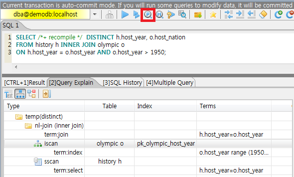

Updating Statistics¶
Statistics for tables and indexes enables queries of the database system to process efficiently. Statistics are not updated automatically for DDL statements such as CREATE INDEX, CREATE TABLE and DML statements such as INSERT and DELETE. UPDATE STATISTICS statement is the only way to update statistics. So it is necessary to update the statistics by UPDATE STATISTICS statement(See Checking Statistics Information).
UPDATE STATISTICS statement is recommended to be executed periodically. It is also recommended to execute when a new index is added or when a mass of INSERT or DELETE statements make the big difference between the statistics and the actual information.
UPDATE STATISTICS ON [schema_name.]class-name [{, [schema_name.]class-name}] [WITH FULLSCAN];
UPDATE STATISTICS ON ALL CLASSES [WITH FULLSCAN];
UPDATE STATISTICS ON CATALOG CLASSES [WITH FULLSCAN];
- WITH FULLSCAN: It updates the statistics with all the data in the specified table. If this is omitted, it updates the statistics with sampling data. The sampling data is 5000 pages regardless of total pages of table.
- ALL CLASSES: If the ALL CLASSES keyword is specified, the statistics on all the tables existing in the database are updated.
- CATALOG CLASSES: It updates the statistics of the catalog tables.
CREATE TABLE foo (a INT, b INT);
CREATE INDEX idx1 ON foo (a);
CREATE INDEX idx2 ON foo (b);
UPDATE STATISTICS ON foo;
UPDATE STATISTICS ON foo WITH FULLSCAN;
UPDATE STATISTICS ON ALL CLASSES;
UPDATE STATISTICS ON ALL CLASSES WITH FULLSCAN;
UPDATE STATISTICS ON CATALOG CLASSES;
UPDATE STATISTICS ON CATALOG CLASSES WITH FULLSCAN;
When starting and ending an update of statistics information, NOTIFICATION message is written on the server error log. You can check the updating term of statistics information by these two messages.
Time: 05/07/13 15:06:25.052 - NOTIFICATION *** file ../../src/storage/statistics_sr.c, line 123 CODE = -1114 Tran = 1, CLIENT = testhost:csql(21060), EID = 4
Started to update statistics (class "code", oid : 0|522|3).
Time: 05/07/13 15:06:25.053 - NOTIFICATION *** file ../../src/storage/statistics_sr.c, line 330 CODE = -1115 Tran = 1, CLIENT = testhost:csql(21060), EID = 5
Finished to update statistics (class "code", oid : 0|522|3, error code : 0).
Note
From version 10.0 of CUBRID, on the HA environment, UPDATE STATISTICS on the master node is replicated to the slave/replica node.
Note
From version 11.3 of CUBRID, synonyms cannot be used when executing UPDATE STATISTICS statement.
/* CURRENT_USER: PUBLIC */
CREATE TABLE t (c int);
CREATE SYNONYM s for t;
UPDATE STATISTICS ON t;
/* Execute OK. */
UPDATE STATISTICS ON s;
/* ERROR: before ' ; '
* Class public.s does not exist. */
Note
From version 11.4 of CUBRID, SELECT authorization is required when executing UPDATE STATISTICS statement.
Checking Statistics Information¶
You can check the statistics Information with the session command of the CSQL Interpreter.
csql> ;info stats table_name
- schema_name: Specifies the schema of the table. If omitted, the schema name of the current session is used.
- table_name: Table name to check the statistics Information
The following shows the statistical information of t1 table in CSQL interpreter.
CREATE TABLE t1 (code INT);
INSERT INTO t1 VALUES(1),(2),(3),(4),(5);
CREATE INDEX i_t1_code ON t1(code);
UPDATE STATISTICS ON t1;
;info stats t1
CLASS STATISTICS
****************
Class name: t1 Timestamp: Mon Mar 25 17:56:10 2024
Total pages in class heap: 1
Total objects: 5
Number of attributes: 1
Attribute: code (integer)
Number of Distinct Values: 5
B+tree statistics:
BTID: { 1 , 832 }
Cardinality: 5 (5) , Total pages: 3 , Leaf pages: 1 , Height: 2
- Number of Distinct Values: The number of values from which duplicates have been removed. It is for calculating selectivity in the optimizer.
- B+tree Cardinality: The number of accumulated distinct values. It is for calculating minimum selectivity in the optimizer.
Viewing Query Plan¶
To view a query plan for a CUBRID SQL query, you can use following methods.
Press “show plan” button on CUBRID Manager.
Change the value of the optimization level by running “;plan simple” or “;plan detail” on CSQL interpreter, or by using the SET OPTIMIZATION statement. You can get the current optimization level value by using the GET OPTIMIZATION statement. For details on CSQL Interpreter, see Session Commands.
SET OPTIMIZATION or GET OPTIMIZATION LEVEL syntax is as following.
SET OPTIMIZATION LEVEL opt-level [;]
GET OPTIMIZATION LEVEL [ { TO | INTO } variable ] [;]
opt-level : This value specifies the optimization level and is associated with the following settings. Any other value will result in an error.
- 0: Does not perform query optimization. The query is executed using the simplest query plan. This value is used only for debugging.
- 1: Creates a query plan by performing query optimization and executes the query. This is a default value used in CUBRID, and does not have to be changed in most cases.
- 2: Creates a query plan by performing query optimization. However, the query itself is not executed. In general, this value is not used; it is used together with the following values to be set for viewing query plans.
- 257: Performs query optimization and outputs the created query plan. This value works for displaying the query plan by internally interpreting the value as 256+1 related with the value 1.
- 258: Performs query optimization and outputs the created query plan, but does not execute the query. That is, this value works for displaying the query plan by internally interpreting the value as 256+2 related with the value 2. This setting is useful to examine the query plan but not to intend to see the query results.
- 513: Performs query optimization and outputs the detailed query plan. This value works for displaying more detailed query plan than the value 257 by internally interpreting the value as 512+1.
- 514: Performs query optimization and outputs the detailed query plan. However, the query is not executed. This value works for displaying more detailed query plan than the value 258 by internally interpreting the value as 512+2.
Note
If you configure the optimization level as not executing the query like 2, 258, or 514, all queries(not only SELECT, but also INSERT, UPDATE, DELETE, REPLACE, TRIGGER, SERIAL, etc.) are not executed.
The CUBRID query optimizer determines whether to perform query optimization and output the query plan by referring to the optimization level value set by the user.
The following shows the result which ran the query after inputting “;plan simple” or “SET OPTIMIZATION LEVEL 257;” in CSQL.
SET OPTIMIZATION LEVEL 257;
-- csql> ;plan simple
SELECT /*+ RECOMPILE */ DISTINCT h.host_year, o.host_nation
FROM history h INNER JOIN olympic o
ON h.host_year = o.host_year AND o.host_year > 1950;
Query plan:
Sort(distinct)
Nested-loop join(h.host_year=o.host_year)
Index scan(olympic o, pk_olympic_host_year, (o.host_year> ?:0 ))
Sequential scan(history h)
- Sort(distinct): Perform DISTINCT.
- Nested-loop join: Join method is Nested-loop.
- Index scan: Perform index-scan by using pk_olympic_host_year index about olympic table. At that time, the condition which used this index is “o.host_year > ?”.
The following shows the result which ran the query after inputting “;plan detail” or “SET OPTIMIZATION LEVEL 513;” in CSQL.
SET OPTIMIZATION LEVEL 513;
-- csql> ;plan detail
SELECT /*+ RECOMPILE */ DISTINCT h.host_year, o.host_nation
FROM history h INNER JOIN olympic o
ON h.host_year = o.host_year AND o.host_year > 1950;
Join graph segments (f indicates final):
seg[0]: [0]
seg[1]: host_year[0] (f)
seg[2]: [1]
seg[3]: host_nation[1] (f)
seg[4]: host_year[1]
Join graph nodes:
node[0]: history h(147/1)
node[1]: olympic o(25/1) (sargs 1)
Join graph equivalence classes:
eqclass[0]: host_year[0] host_year[1]
Join graph edges:
term[0]: h.host_year=o.host_year (sel 0.04) (join term) (mergeable) (inner-join) (indexable host_year[1]) (loc 0)
Join graph terms:
term[1]: o.host_year range (1950 gt_inf max) (sel 0.1) (rank 2) (sarg term) (not-join eligible) (indexable host_year[1]) (loc 0)
Query plan:
temp(distinct)
subplan: nl-join (inner join)
edge: term[0]
outer: iscan
class: o node[1]
index: pk_olympic_host_year term[1]
cost: 1 card 2
inner: sscan
class: h node[0]
sargs: term[0]
cost: 1 card 147
cost: 3 card 15
cost: 9 card 15
Query stmt:
select distinct h.host_year, o.host_nation from history h, olympic o where h.host_year=o.host_year and (o.host_year> ?:0 )
On the above output, the information which is related to the query plan is “Query plan:”. Query plan is performed sequentially from the inside above line. In other words, “outer: iscan -> inner:scan” is repeatedly performed and at last, “temp(distinct)” is performed. “Join graph segments” is used for checking more information on “Query plan:”. For example, “term[0]” in “Query plan:” is represented as “term[0]: h.host_year=o.host_year (sel 0.04) (join term) (mergeable) (inner-join) (indexable host_year[1]) (loc 0)” in “Join graph segments”.
The following shows the explanation of the above items of “Query plan:”.
- temp(distinct): (distinct) means that CUBRID performs DISTINCT query. temp means that it saves the result to the temporary space.
- nl-join: “nl-join” means nested loop join.
- (inner join): join type is “inner join”.
- outer: iscan: performs iscan(index scan) in the outer table.
- class: o node[1]: It uses o table. For details, see node[1] of “Join graph segments”.
- index: pk_olympic_host_year term[1]: use pk_olympic_host_year index and for details, see term[1] of “Join graph segments”.
- cost: a cost to perform this syntax.
- card: It means cardinality. Note that this is an approximate value.
- inner: sscan: It performs sscan(sequential scan) in the inner table.
- class: h node[0]: It uses h table. For details, see node[0] of “Join graph segments”.
- sargs: term[0]: sargs represent data filter(WHERE condition which does not use an index); it means that term[0] is the condition used as data filter.
- cost: A cost to perform this syntax.
- card: It means cardinality. Note that this is an approximate value.
- outer: iscan: performs iscan(index scan) in the outer table.
- cost: A cost to perform all syntaxes. It includes the previously performed cost.
- card: It means cardinality. Note that this is an approximate value.
Query Plan Related Terms
The following show the meaning for each term which is printed as a query plan.
- Join method: It is printed as “nl-join” on the above. The following are the join methods which are printed on the query plan.
- nl-join: Nested loop join
- m-join: Sort merge join
- idx_join: Nested loop join, and it is a join which uses an index in the inner table as reading rows of the outer table.
- Join type: It is printed as “(inner join)” on the above. The following are the join types which are printed on the query plan.
- inner join
- left outer join
- right outer join: On the query plan, the different “outer” direction with the query’s direction can be printed. For example, even if you specified “right outer” on the query, but “left outer” can be printed on the query plan.
- cross join
- Types of join tables: It is printed as outer or inner on the above. They are separated as outer table and inner table which are based on the position on either side of the loop, on the nested loop join.
- outer table: The first base table to read when joining.
- inner table: The target table to read later when joining.
- Scan method: It is printed as iscan or sscan. You can judge that if the query uses index or not.
- sscan: sequential scan. Also it can be called as full table scan; it scans all of the table without using an index.
- iscan: index scan. It limits the range to scan by using an index.
- cost: It internally calculate the cost related to CPU, IO etc., mainly the use of resources.
- card: It means cardinality. It is a number of rows which are predicted as selected.
The following is an example of performing m-join(sort merge join) as specifying USE_MERGE hint. In general, sort merge join is used when sorting and merging an outer table and an inner table is judged as having an advantage than performing nested loop join. In most cases, it is desired that you do not perform sort merge join.
Note
From 9.3 version, if USE_MERGE hint is not specified or the optimizer_enable_merge_join parameter of cubrid.conf is not specified as yes, sort merge join will not be considered to be applied.
SET OPTIMIZATION LEVEL 513;
-- csql> ;plan detail
SELECT /*+ RECOMPILE USE_MERGE*/ DISTINCT h.host_year, o.host_nation
FROM history h LEFT OUTER JOIN olympic o ON h.host_year = o.host_year AND o.host_year > 1950;
Query plan:
temp(distinct)
subplan: temp
order: host_year[0]
subplan: m-join (left outer join)
edge: term[0]
outer: temp
order: host_year[0]
subplan: sscan
class: h node[0]
cost: 1 card 147
cost: 10 card 147
inner: temp
order: host_year[1]
subplan: iscan
class: o node[1]
index: pk_olympic_host_year term[1]
cost: 1 card 2
cost: 7 card 2
cost: 18 card 147
cost: 24 card 147
cost: 30 card 147
The following performs the idx-join(index join). If performing join by using an index of inner table is judged as having an advantage, you can ensure performing idx-join by specifying USE_IDX hint.
SET OPTIMIZATION LEVEL 513;
-- csql> ;plan detail
CREATE INDEX i_history_host_year ON history(host_year);
SELECT /*+ RECOMPILE */ DISTINCT h.host_year, o.host_nation
FROM history h INNER JOIN olympic o ON h.host_year = o.host_year;
Query plan:
temp(distinct)
subplan: idx-join (inner join)
outer: sscan
class: o node[1]
cost: 1 card 25
inner: iscan
class: h node[0]
index: i_history_host_year term[0] (covers)
cost: 1 card 147
cost: 2 card 147
cost: 9 card 147
On the above query plan, “(covers)” is printed on the “index: i_history_host_year term[0]” of “inner: iscan”, it means that Covering Index functionality is applied. In other words, it does not retrieve data storage additionally because there are required data inside the index in inner table.
If you ensure that left table’s row number is a lot smaller than the right table’s row number on the join tables, you can specify ORDERED hint. Then always the left table will be outer table, and the right table will be inner table.
SELECT /*+ RECOMPILE ORDERED */ DISTINCT h.host_year, o.host_nation
FROM history h INNER JOIN olympic o ON h.host_year = o.host_year;
Query Profiling¶
If the performance analysis of SQL is required, you can use query profiling feature. To use query profiling, specify SQL trace with SET TRACE ON syntax; to print out the profiling result, run SHOW TRACE syntax.
And if you want to always include the query plan when you run SHOW TRACE, you need to add /*+ RECOMPILE */ hint on the query.
The format of SET TRACE ON syntax is as follows.
SET TRACE {ON | OFF} [OUTPUT {TEXT | JSON}]
- ON: set on SQL trace.
- OFF: set off SQL trace.
- OUTPUT TEXT: print out as a general TEXT format. If you omit OUTPUT clause, TEXT format is specified.
- OUTPUT JSON: print out as a JSON format.
As below, if you run SHOW TRACE syntax, the trace result is shown.
SHOW TRACE;
Below is an example that prints out the query tracing result after setting SQL trace ON.
csql> SET TRACE ON;
csql> SELECT /*+ RECOMPILE */ o.host_year, o.host_nation, o.host_city, SUM(p.gold)
FROM OLYMPIC o, PARTICIPANT p
WHERE o.host_year = p.host_year AND p.gold > 20
GROUP BY o.host_nation;
csql> SHOW TRACE;
=== <Result of SELECT Command in Line 2> ===
trace
======================
'
Query Plan:
SORT (group by)
NESTED LOOPS (inner join)
TABLE SCAN (o)
INDEX SCAN (p.fk_participant_host_year) (key range: o.host_year=p.host_year)
rewritten query: select o.host_year, o.host_nation, o.host_city, sum(p.gold) from OLYMPIC o, PARTICIPANT p where o.host_year=p.host_year and (p.gold> ?:0 ) group by o.host_nation
Trace Statistics:
SELECT (time: 2, fetch: 975, fetch_time: 1, ioread: 2)
SCAN (table: olympic), (heap time: 0, fetch: 26, ioread: 0, readrows: 25, rows: 25)
SCAN (index: participant.fk_participant_host_year), (btree time: 1, fetch: 941, ioread: 2, readkeys: 5, filteredkeys: 5, rows: 916) (lookup time: 0, rows: 14)
GROUPBY (time: 0, sort: true, page: 0, ioread: 0, rows: 5)
'
In the above example, under lines of “Trace Statistics:” are the result of tracing. Each items of tracing result are as below.
SELECT (time: 2, fetch: 975, fetch_time: 1, ioread: 2)
- time: 2 => Total query time took 2ms.
- fetch: 975 => 975 times were fetched regarding pages. (not the number of pages, but the count of accessing pages. even if the same pages are fetched, the count is increased.).
- fetch_time: 1=> Total fetch time took 1ms.
- ioread: disk accessed 2 times.
: Total statistics regarding SELECT query. If the query is rerun, fetching count and ioread count can be shrinken because some of query result are read from buffer.
SCAN (table: olympic), (heap time: 0, fetch: 26, ioread: 0, readrows: 25, rows: 25)
- heap time: 0 => It took less than 1ms. CUBRID rounds off a value less than millisecond, so a time value less than 1ms is displayed as 0.
- fetch: 26 => page fetching count is 26.
- ioread: 0 => disk accessing count is 0.
- readrows: 25 => the number of rows read when scanning is 25.
- rows: 25 => the number of rows in result is 25.
: Heap scan statistics for the olympic table.
SCAN (index: participant.fk_participant_host_year), (btree time: 1, fetch: 941, ioread: 2, readkeys: 5, filteredkeys: 5, rows: 916) (lookup time: 0, rows: 14)
- btree time: 1 => It took 1ms.
- fetch: 941 => page fetching count is 941.
- ioread: 2 => disk accessing count is 2.
- readkeys: 5 => the number of keys read is 5.
- filteredkeys: 5 => the number of keys which the key filter is applied is 5.
- rows: 916 => the number of rows scanning is 916.
- lookup time: 0 => It took less than 1ms when accessing data after index scan.
- rows: 14 => the number of rows after applying data filter; in the query, the number of rows is 14 when data filter “p.gold > 20” is applied.
: Index scanning statistics regarding participant.fk_participant_host_year index.
GROUPBY (time: 0, sort: true, page: 0, ioread: 0, rows: 5)
- time: 0 => It took less than 1ms when “group by” is applied.
- sort: true => It’s true because sorting is applied.
- page: 0 => the number or temporary pages used in sorting is 0.
- ioread: 0 => It took less than 1ms to access disk.
- rows: 5 => the number of result rows regarding “group by” is 5.
: Group by statistics.
The following is an example to join 3 tables.
csql> SET TRACE ON;
csql> SELECT /*+ RECOMPILE ORDERED */ o.host_year, o.host_nation, o.host_city, n.name, SUM(p.gold), SUM(p.silver), SUM(p.bronze)
FROM OLYMPIC o,
(select /*+ NO_MERGE */ * from PARTICIPANT p where p.gold > 10) p,
NATION n
WHERE o.host_year = p.host_year AND p.nation_code = n.code
GROUP BY o.host_nation;
csql> SHOW TRACE;
trace
======================
'
Query Plan:
TABLE SCAN (p)
rewritten query: (select p.host_year, p.nation_code, p.gold, p.silver, p.bronze from PARTICIPANT p where (p.gold> ?:0 ))
SORT (group by)
NESTED LOOPS (inner join)
NESTED LOOPS (inner join)
TABLE SCAN (o)
TABLE SCAN (p)
INDEX SCAN (n.pk_nation_code) (key range: p.nation_code=n.code)
rewritten query: select /*+ ORDERED */ o.host_year, o.host_nation, o.host_city, n.[name], sum(p.gold), sum(p.silver), sum(p.bronze) from OLYMPIC o, (select p.host_year, p.nation_code, p.gold, p.silver, p.bronze from PARTICIPANT p where (p.gold> ?:0 )) p (host_year, nation_code, gold,
silver, bronze), NATION n where o.host_year=p.host_year and p.nation_code=n.code group by o.host_nation
Trace Statistics:
SELECT (time: 6, fetch: 880, fetch_time: 2, ioread: 0)
SCAN (table: olympic), (heap time: 0, fetch: 104, ioread: 0, readrows: 25, rows: 25)
SCAN (hash temp(m), buildtime : 0, time: 0, fetch: 0, ioread: 0, readrows: 76, rows: 38)
SCAN (index: nation.pk_nation_code), (btree time: 2, fetch: 760, ioread: 0, readkeys: 38, filteredkeys: 0, rows: 38) (lookup time: 0, rows: 38)
GROUPBY (time: 0, hash: true, sort: true, page: 0, ioread: 0, rows: 5)
SUBQUERY (uncorrelated)
SELECT (time: 2, fetch: 12, ioread: 0)
SCAN (table: participant), (heap time: 2, fetch: 12, ioread: 0, readrows: 916, rows: 38)
'
The following are the explanation regarding items of trace statistics.
SELECT
- time: total estimated time when this query is performed(ms)
- fetch: total page fetching count about this query
- fetch_time : total fetch time when this query is performed(ms)
- ioread: total I/O read count about this query. disk access count when the data is read
SCAN
heap: data scanning job without index
- time, fetch, ioread: the estimated time(ms), page fetching count and I/O read count in the heap of this operation
- readrows: the number of rows read when this operation is performed
- rows: the number of result rows when this operation is performed
btree: index scanning job
- time, fetch, ioread: the estimated time(ms), page fetching count and I/O read count in the btree of this operation
- readkeys: the number of the keys which are read in btree when this operation is performed
- filteredkeys: the number of the keys to which the key filter is applied from the read keys
- rows: the number of result rows when this operation is performed; the number of result rows to which key filter is applied
temp: data scanning job with temp file
- hash temp(m): hash list scan or not. depending on the amount of data, the IN-MEMORY(m), HYBRID(h), FILE(f) hash data structure is used.
- buildtime: the estimated time(ms) in building hash table.
- time: the estimated time(ms) in probing hash table.
- fetch, ioread: page fetching count and I/O read count in the temp file of this operation
- readrows: the number of rows read when this operation is performed
- rows: the number of result rows when this operation is performed
lookup: data accessing job after index scanning
- time: the estimated time(ms) in this operation
- rows: the number of the result rows in this operation; the number of result rows to which the data filter is applied
noscan: An operation that uses statistical information of index headers without scanning when executing an aggregate operation. (aggregate: count, min, max)
agl: aggregate lookup, index list used for aggregate operation
The following is an example for noscan and agl.
SET TRACE ON;
CREATE TABLE agl_tbl (id INTEGER PRIMARY KEY, phone VARCHAR(20));
INSERT INTO agl_tbl VALUES (1, '123-456-789');
INSERT INTO agl_tbl VALUES (999, '999-999-999');
SELECT count(*), min(id), max(id) FROM agl_tbl;
SHOW TRACE;
Trace Statistics:
SELECT (time: 0, fetch: 16, fetch_time: 0, ioread: 0)
SCAN (table: agl_tbl), (noscan time: 0, fetch: 0, ioread: 0, readrows: 0, rows: 0, agl: pk_agl_tbl_id)
GROUPBY
- time: the estimated time(ms) in this operation
- sort: sorting or not
- page: the number of pages which is read in this operation; the number of used pages except the internal sorting buffer
- rows: the number of the result rows in this operation
- hash: hash aggregate evaluation or not, when sorting tuples in the aggregate function(true/false). See NO_HASH_AGGREGATE hint.
INDEX SCAN
- key range: the range of a key
- covered: covered index or not(true/false)
- loose: loose index scan or not(true/false)
The above example can be output as JSON format.
csql> SET TRACE ON OUTPUT JSON;
csql> SELECT n.name, a.name FROM athlete a, nation n WHERE n.code=a.nation_code;
csql> SHOW TRACE;
trace
======================
'{
"Trace Statistics": {
"SELECT": {
"time": 29,
"fetch": 5836,
"ioread": 3,
"SCAN": {
"access": "temp",
"temp": {
"time": 5,
"fetch": 34,
"ioread": 0,
"readrows": 6677,
"rows": 6677
}
},
"MERGELIST": {
"outer": {
"SELECT": {
"time": 0,
"fetch": 2,
"ioread": 0,
"SCAN": {
"access": "table (nation)",
"heap": {
"time": 0,
"fetch": 1,
"ioread": 0,
"readrows": 215,
"rows": 215
}
},
"ORDERBY": {
"time": 0,
"sort": true,
"page": 21,
"ioread": 3
}
}
}
}
}
}
}'
On CSQL interpreter, if you use the command to set the SQL trace on automatically, the trace result is printed out automatically after printing the query result even if you do not run SHOW TRACE; syntax.
For how to set the trace on automatically, see Set SQL trace.
Note
- CSQL interpreter which is run in the standalone mode(use -S option) does not support SQL trace feature.
- When multiple queries are performed at once(batch query, array query), they are not profiled.
Using SQL Hint¶
Using hints can affect the performance of query execution. You can allow the query optimizer to create more efficient execution plan by referring to the SQL HINT. The SQL HINTs related tale join and index are provided by CUBRID.
{ SELECT | UPDATE | DELETE } /*+ <hint> [ { <hint> } ... ] */ ...;
MERGE /*+ <merge_statement_hint> [ { <merge_statement_hint> } ... ] */ INTO ...;
<hint> ::=
USE_NL [ (<spec_name_comma_list>) ] |
USE_IDX [ (<spec_name_comma_list>) ] |
USE_MERGE [ (<spec_name_comma_list>) ] |
ORDERED |
LEADING |
USE_DESC_IDX |
USE_SBR |
INDEX_SS [ (<spec_name_comma_list>) ] |
INDEX_LS |
NO_DESC_IDX |
NO_COVERING_IDX |
NO_MULTI_RANGE_OPT |
NO_SORT_LIMIT |
NO_SUBQUERY_CACHE |
NO_PUSH_PRED |
NO_MERGE |
NO_ELIMINATE_JOIN |
NO_HASH_AGGREGATE |
NO_HASH_LIST_SCAN |
NO_LOGGING |
RECOMPILE |
QUERY_CACHE
<spec_name_comma_list> ::= <spec_name> [, <spec_name>, ... ]
<spec_name> ::= [schema_name.]table_name | [schema_name.]view_name
<merge_statement_hint> ::=
USE_UPDATE_INDEX (<update_index_list>) |
USE_DELETE_INDEX (<insert_index_list>) |
RECOMPILE
SQL hints are specified by using a plus sign(+) to comments. To use a hint, there are three styles as being introduced on Comment. Therefore, also SQL hint can be used as three styles.
- /*+ hint */
- –+ hint
- //+ hint
The hint comment must appear after the keyword such as SELECT, UPDATE or DELETE, and the comment must begin with a plus sign (+), following the comment delimiter. When you specify several hints, they are separated by blanks.
The following hints can be specified in UPDATE, DELETE and SELECT statements.
USE_NL: Related to a table join, the query optimizer creates a nested loop join execution plan with this hint.
USE_MERGE: Related to a table join, the query optimizer creates a sort merge join execution plan with this hint.
ORDERED: Related to a table join, the query optimizer create a join execution plan with this hint, based on the order of tables specified in the FROM clause. The left table in the FROM clause becomes the outer table; the right one becomes the inner table.
LEADING: Related to a table join, the query optimizer create a join execution plan with this hint, based on the order of tables specified in the LEADING hint.
USE_IDX: Related to an index, the query optimizer creates an index join execution plan corresponding to a specified table with this hint.
USE_DESC_IDX: This is a hint for the scan in descending index. For more information, see Index Scan in Descending Order.
USE_SBR: This is a hint for the statement-based replication. It supports data replication for tables without a primary key.
Note
The data inconsistency of a table may occur between nodes since the corresponding statement is executed when the transaction log is applied in the slave node.
INDEX_SS: Consider the query plan of index skip scan. For more information, see Index Skip Scan.
INDEX_LS: Consider the query plan of loose index scan. For more information, see Loose Index Scan.
NO_DESC_IDX: This is a hint not to use the descending index.
NO_COVERING_IDX: This is a hint not to use the covering index. For details, see Covering Index.
NO_MULTI_RANGE_OPT: This is a hint not to use the multi-key range optimization. For details, see Multiple Key Ranges Optimization.
NO_SORT_LIMIT: This is a hint not to use the SORT-LIMIT optimization. For more details, see SORT-LIMIT optimization.
NO_SUBQUERY_CACHE: This is a hint not to use the SUBQUERY CACHE optimization. For more details, see SUBQUERY CACHE (correlated).
NO_PUSH_PRED: This is a hint not to use the PREDICATE-PUSH optimization.
NO_MERGE: This is a hint not to use the VIEW-MERGE optimization.
NO_ELIMINATE_JOIN: This is a hint not to use join elimination optimization. For more details, see Join Elimination Optimization.
NO_HASH_AGGREGATE: This is a hint not to use hashing for the sorting tuples in aggregate functions. Instead, external sorting is used in aggregate functions. By using an in-memory hash table, we can reduce or even eliminate the amount of data that needs to be sorted. However, in some scenarios the user may know beforehand that hash aggregation will fail and can use the hint to skip hash aggregation entirely. For setting the memory size of hashing aggregate, see max_agg_hash_size.
Note
Hash aggregate evaluation will not work for functions evaluated on distinct values (e.g. AVG(DISTINCT x)) and for the GROUP_CONCAT and MEDIAN functions, since they require an extra sorting step for the tuples of each group.
NO_HASH_LIST_SCAN: This is a hint not to use hash list scan for scanning sub-query’s result. Instead, list scan is used to scan temp file. By building and probing hash table, we can reduce the amount of data that needs to be searched. However, in some scenarios, the user may know beforehand that outer cardinality is very small and can use the hint to skip hash list scan entirely. For setting the memory size of hash scan, see max_hash_list_scan_size.
Note
Hash List scan only works for predicates having a equal operation and does NOT work for predicates having OID type.
NO_LOGGING: This is a hint not to include the redo in the log generated when inserting, updating, or deleting records to a table.
Note
Currently, The NO_LOGGING hint only affects the log created from the heap file when inserting, updating, or deleting records to a table. Therefore, problems such as the inconsistency between the data of the table and the data of the index might occur after recovery; and the situation of committed record cannot be recovered might also occur, etc. You should use it carefully.
- RECOMPILE : Recompiles the query execution plan. This hint is used to delete the query execution plan stored in the cache and establish a new query execution plan.
- QUERY_CACHE: This is a hint for caching the query with its results. This hint can be specified in SELECT statements only. For more information, see QUERY CACHE.
Note
If <spec_name> is specified together with USE_NL, USE_IDX or USE_MERGE, the specified join method applies only to the <spec_name>.
SELECT /*+ ORDERED USE_NL(B) USE_NL(C) USE_MERGE(D) */ *
FROM A INNER JOIN B ON A.col=B.col
INNER JOIN C ON B.col=C.col INNER JOIN D ON C.col=D.col;
If you run the above query, USE_NL is applied when A and B are joined; USE_NL is applied when C is joined, too; USE_MERGE is applied when D is joined.
If USE_NL and USE_MERGE are specified together without <spec_name>, the given hint is ignored. In some cases, the query optimizer cannot create a query execution plan based on the given hint. For example, if USE_NL is specified for a right outer join, the query is converted to a left outer join internally, and the join order may not be guaranteed.
Note
If you specify the ORDERED hint, all LEADING hint is ignored. If you specify two or more LEADING hints, then only the first one is activated and all of them except the first are ignored.
SELECT /*+ ORDERED LEADING(b, d) */ *
FROM a INNER JOIN b ON a.col=b.col
INNER JOIN c ON b.col=c.col INNER JOIN d ON c.col=d.col;
If you run the above query, the LEADING hint is ignored, and tables a, b, c, and d are joined in the order of the FROM clause according to the ORDERED hint.
SELECT /*+ LEADING(b, d) LEADING(c, d) */ *
FROM a INNER JOIN b ON a.col=b.col
INNER JOIN c ON b.col=c.col INNER JOIN d ON c.col=d.col;
If you run the above query, the second LEADING hint is ignored, and join order in which tables b and d are joined first is generated.
MERGE statement can have below hints.
- USE_INSERT_IDX (<insert_index_list>): An index hint which is used in INSERT clause of MERGE statement. Lists index names to insert_index_list to use when executing INSERT clause. This hint is applied to <join_condition> of MERGE statement.
- USE_UPDATE_IDX (<update_index_list>): An index hint which is used in UPDATE clause of MERGE statement. Lists index names to update_index_list to use when executing UPDATE clause. This hint is applied to <join_condition> and <update_condition> of MERGE statement.
- RECOMPILE: See the above RECOMPILE.
Table/view names to join can be specified to the joining hint; at this time, table/view names are separated by “,”.
SELECT /*+ USE_NL(a, b) */ *
FROM a INNER JOIN b ON a.col=b.col;
The following example shows how to retrieve the years when ‘Sim Kwon Ho’ won medals and the types of medals. It can be expressed by the following query. The query optimizer creates a nested loop join execution plan that has the athlete table as an outer table and the game table as an inner table.
-- csql> ;plan_detail
SELECT /*+ USE_NL ORDERED */ a.name, b.host_year, b.medal
FROM athlete a, game b
WHERE a.name = 'Sim Kwon Ho' AND a.code = b.athlete_code;
Query plan:
idx-join (inner join)
outer: sscan
class: a node[0]
sargs: term[1]
cost: 44 card 7
inner: iscan
class: b node[1]
index: fk_game_athlete_code term[0]
cost: 3 card 8653
cost: 73 card 9
The following example shows how to specify tables when using a USE_NL hint.
-- csql> ;plan_detail
SELECT /*+ USE_NL(a,b) */ a.name, b.host_year, b.medal
FROM athlete a, game b
WHERE a.name = 'Sim Kwon Ho' AND a.code = b.athlete_code;
Index Hint¶
The index hint syntax allows the query processor to select a proper index by specifying the index in the query. You can specify the index hint by USING INDEX clause or by { USE | FORCE | IGNORE } INDEX syntax after “FROM table” clause.
USING INDEX¶
USING INDEX clause should be specified after WHERE clause of SELECT, DELETE or UPDATE statement. USING INDEX clause forces a sequential/index scan to be used or an index that can improve the performance to be included.
If USING INDEX clause is specified with the list of index names, query optimizer creates optimized execution plan by calculating the query execution cost based on the specified indexes only and comparing the index scan cost and the sequential scan cost of the specified indexes(CUBRID performs cost-based query optimization to select an execution plan).
The USING INDEX clause is useful to get the results in the desired order without ORDER BY. When index scan is performed by CUBRID, the results are created in the order they were saved in the index. When there are more than one indexes in one table, you can use USING INDEX to get the query results in a given order of indexes.
SELECT ... WHERE ...
[USING INDEX { NONE | [ ALL EXCEPT ] <index_spec> [ {, <index_spec> } ...] } ] [ ; ]
DELETE ... WHERE ...
[USING INDEX { NONE | [ ALL EXCEPT ] <index_spec> [ {, <index_spec> } ...] } ] [ ; ]
UPDATE ... WHERE ...
[USING INDEX { NONE | [ ALL EXCEPT ] <index_spec> [ {, <index_spec> } ...] } ] [ ; ]
<index_spec> ::=
[table_spec.]index_name [(+) | (-)] |
table_spec.NONE
- NONE: If NONE is specified, a sequential scan is used on all tables.
- ALL EXCEPT: All indexes except the specified indexes can be used when the query is executed.
- index_name(+): If (+) is specified after the index_name, it is the first priority in index selection. IF this index is not proper to run the query, it is not selected.
- index_name(-): If (-) is specified after the index_name, it is excluded from index selection.
- table_spec.NONE: All indexes are excluded from the selection, so sequential scan is used.
USE, FORCE, IGNORE INDEX¶
Index hints can be specified through USE, FORCE, IGNORE INDEX syntax after table specification of FROM clause.
FROM table_spec [ <index_hint_clause> ] ...
<index_hint_clause> ::=
{ USE | FORCE | IGNORE } INDEX ( <index_spec> [, <index_spec> ...] )
<index_spec> ::=
[table_spec.]index_name
- USE INDEX ( <index_spec> ): Only specified indexes are considered when choose them.
- FORCE INDEX ( <index_spec> ): Specified indexes are chosen as the first priority.
- IGNORE INDEX ( <index_spec> ): Specified indexes are excluded from the choice.
USE, FORCE, IGNORE INDEX syntax is automatically rewritten as the proper USING INDEX syntax by the system.
Examples of index hint¶
CREATE TABLE athlete2 (
code SMALLINT PRIMARY KEY,
name VARCHAR(40) NOT NULL,
gender CHAR(1),
nation_code CHAR(3),
event VARCHAR(30)
);
CREATE UNIQUE INDEX athlete2_idx1 ON athlete2 (code, nation_code);
CREATE INDEX athlete2_idx2 ON athlete2 (gender, nation_code);
Below two queries do the same behavior and they select index scan if the specified index, athlete2_idx2’s scan cost is lower than sequential scan cost.
SELECT /*+ RECOMPILE */ *
FROM athlete2 USE INDEX (athlete2_idx2)
WHERE gender='M' AND nation_code='USA';
SELECT /*+ RECOMPILE */ *
FROM athlete2
WHERE gender='M' AND nation_code='USA'
USING INDEX athlete2_idx2;
Below two queries do the same behavior and they always use athlete2_idx2
SELECT /*+ RECOMPILE */ *
FROM athlete2 FORCE INDEX (athlete2_idx2)
WHERE gender='M' AND nation_code='USA';
SELECT /*+ RECOMPILE */ *
FROM athlete2
WHERE gender='M' AND nation_code='USA'
USING INDEX athlete2_idx2(+);
Below two queries do the same behavior and they always don’t use athlete2_idx2
SELECT /*+ RECOMPILE */ *
FROM athlete2 IGNORE INDEX (athlete2_idx2)
WHERE gender='M' AND nation_code='USA';
SELECT /*+ RECOMPILE */ *
FROM athlete2
WHERE gender='M' AND nation_code='USA'
USING INDEX athlete2_idx2(-);
Below query always do the sequential scan.
SELECT *
FROM athlete2
WHERE gender='M' AND nation_code='USA'
USING INDEX NONE;
SELECT *
FROM athlete2
WHERE gender='M' AND nation_code='USA'
USING INDEX athlete2.NONE;
Below query forces to be possible to use all indexes except athlete2_idx2 index.
SELECT *
FROM athlete2
WHERE gender='M' AND nation_code='USA'
USING INDEX ALL EXCEPT athlete2_idx2;
When two or more indexes have been specified in the USING INDEX clause, the query optimizer selects the proper one of the specified indexes.
SELECT *
FROM athlete2 USE INDEX (athlete2_idx2, athlete2_idx1)
WHERE gender='M' AND nation_code='USA';
SELECT *
FROM athlete2
WHERE gender='M' AND nation_code='USA'
USING INDEX athlete2_idx2, athlete2_idx1;
When a query is run for several tables, you can specify a table to perform index scan by using a specific index and another table to perform sequential scan. The query has the following format.
SELECT *
FROM tab1, tab2
WHERE ...
USING INDEX tab1.idx1, tab2.NONE;
When executing a query with the index hint syntax, the query optimizer considers all available indexes on the table for which no index has been specified. For example, when the tab1 table includes idx1 and idx2 and the tab2 table includes idx3, idx4, and idx5, if indexes for only tab1 are specified but no indexes are specified for tab2, the query optimizer considers the indexes of tab2.
SELECT ...
FROM tab1, tab2 USE INDEX(tab1.idx1)
WHERE ... ;
SELECT ...
FROM tab1, tab2
WHERE ...
USING INDEX tab1.idx1;
The above query select the scan method of table tab1 after comparing the cost between the sequential scan of the table tab1 and the index scan of the index idx1, and select the scan method of table tab2 after comparing the cost between the sequential scan of the table tab2 and the index scan of the indexes idx3, idx4, idx5.
Special Indexes¶
Filtered Index¶
The filtered index is used to sort, search, or operate a well-defined partials set for one table. It is called the partial index since only some data that satisfy the condition are kept in that index.
CREATE /*+ hints */ INDEX index_name
ON [schema_name.]table_name (col1, col2, ...)
WHERE <filter_predicate>;
ALTER /*+ hints */ INDEX index_name
[ ON [schema_name.]table_name (col1, col2, ...)
[ WHERE <filter_predicate> ] ]
REBUILD;
<filter_predicate> ::= <filter_predicate> AND <expression> | <expression>
- <filter_predicate>: Condition to compare the column and the constant. When there are several conditions, filtering is available only when they are connected by using AND. The filter conditions can include most of the operators and functions supported by CUBRID. However, the date/time function that shows the current date/time (ex:
SYS_DATETIME()) or random functions (ex:RAND()), which outputs different results for one input are not allowed.
If you want to apply the filtered index, that filtered index must be specified by USE INDEX syntax or FORCE INDEX syntax.
When a filtered index is specified by USING INDEX clause or USE INDEX syntax:
If columns of which the index consists are not included on the conditions of WHERE clause, the filtered index is not used.
CREATE TABLE blogtopic ( blogID BIGINT NOT NULL, title VARCHAR(128), author VARCHAR(128), content VARCHAR(8096), postDate TIMESTAMP NOT NULL, deleted SMALLINT DEFAULT 0 ); CREATE INDEX my_filter_index ON blogtopic(postDate) WHERE deleted=0;
On the below query, postDate, a column of which my_filter_index consists, is included on the conditions of WHERE condition. Therefore, this index can be used by USE INDEX clause.
SELECT * FROM blogtopic USE INDEX (my_filter_index) WHERE postDate>'2010-01-01' AND deleted=0;
When a filtered index is specified by USING INDEX <index_name>(+) clause or FORCE INDEX syntax:
Even if a column of which the index consists is not included on the condition of WHERE clause, the filtered index is used.
On the below query, my_filter_index cannot be used by “USE INDEX” syntax because a column of which my_filter_index consists is not included on the WHERE condition.
SELECT * FROM blogtopic USE INDEX (my_filter_index) WHERE author = 'David' AND deleted=0;
Therefore, to use my_filter_index, it should be forced by “FORCE INDEX”.
SELECT * FROM blogtopic FORCE INDEX (my_filter_index) WHERE author = 'David' AND deleted=0;
The following example shows a bug tracking system that maintains bugs/issues. After a specified period of development, the bugs table records bugs. Most of the bugs have already been closed. The bug tracking system makes queries on the table to find new open bugs. In this case, the indexes on the bug table do not need to know the records on closed bugs. Then the filtered indexes allow indexing of open bugs only.
CREATE TABLE bugs
(
bugID BIGINT NOT NULL,
CreationDate TIMESTAMP NOT NULL,
Author VARCHAR(255),
Subject VARCHAR(255),
Description VARCHAR(255),
CurrentStatus INTEGER,
Closed SMALLINT
);
Indexes for open bugs can be created by using the following sentence:
CREATE INDEX idx_open_bugs ON bugs(bugID) WHERE Closed = 0;
To process queries that are interested in open bugs, specify the index as an index hint. It will allow creating query results by accessing less index pages through filtered indexes.
SELECT *
FROM bugs
WHERE Author = 'madden' AND Subject LIKE '%fopen%' AND Closed = 0
USING INDEX idx_open_bugs(+);
SELECT *
FROM bugs FORCE INDEX (idx_open_bugs)
WHERE CreationDate > CURRENT_DATE - 10 AND Closed = 0;
On the above example, if you use “USING INDEX idx_open_bugs” or “USE INDEX (idx_open_bugs)”, a query is processed without using the idx_open_bugs index.
Warning
If you execute queries by specifying indexes with index hint syntax even though the conditions of creating filtered indexes does not match the query conditions, CUBRID performs a query by choosing a specified index. Therefore, query results can be different with the given searching conditions.
Note
Constraints
Only generic indexes are allowed as filtered indexes. For example, the filtered unique index is not allowed. Also, it is not allowed that columns which compose an index are all NULLable. For example, below is not allowed because Author is NULLable.
CREATE INDEX idx_open_bugs ON bugs (Author) WHERE Closed = 0;
ERROR: before ' ; '
Invalid filter expression (bugs.Closed=0) for index.
However, below is allowed because Author is NULLable, but CreationDate is not NULLable.
CREATE INDEX idx_open_bugs ON bugs (Author, CreationDate) WHERE Closed = 0;
The following cases are not allowed as filtering conditions.
Functions, which output different results with the same input, such as date/time function or random function
CREATE INDEX idx ON bugs(creationdate) WHERE creationdate > SYS_DATETIME;
ERROR: before ' ; ' 'sys_datetime ' is not allowed in a filter expression for index.
CREATE INDEX idx ON bugs(bugID) WHERE bugID > RAND();
ERROR: before ' ; ' 'rand ' is not allowed in a filter expression for index.
In case of using the OR operator
CREATE INDEX IDX ON bugs (bugID) WHERE bugID > 10 OR bugID = 3;
ERROR: before ' ; ' ' or ' is not allowed in a filter expression for index.
In case of including functions like
INCR(),DECR()functions, which modify the data of a table.In case of Serial-related functions and including pseudo columns.
In case of including aggregate functions such as
MIN(),MAX(),STDDEV()In case of using the types where indexes cannot be created
- The operators and functions where an argument is the SET type
- The functions to use LOB file(
CHAR_TO_BLOB(),CHAR_TO_CLOB(),BIT_TO_BLOB(),BLOB_FROM_FILE(),CLOB_FROM_FILE())
The IS NULL operator can be used only when at least one column of an index is not NULL.
CREATE TABLE t (a INT, b INT); -- IS NULL cannot be used with expressions CREATE INDEX idx ON t (a) WHERE (not a) IS NULL;
ERROR: before ' ; ' Invalid filter expression (( not t.a<>0) is null ) for index.
CREATE INDEX idx ON t (a) WHERE (a+1) IS NULL;
ERROR: before ' ; ' Invalid filter expression ((t.a+1) is null ) for index.
-- At least one attribute must not be used with IS NULL CREATE INDEX idx ON t(a,b) WHERE a IS NULL ;
ERROR: before ' ; ' Invalid filter expression (t.a is null ) for index.
CREATE INDEX idx ON t(a,b) WHERE a IS NULL and b IS NULL;
ERROR: before ' ; ' Invalid filter expression (t.a is null and t.b is null ) for index.
CREATE INDEX idx ON t(a,b) WHERE a IS NULL and b IS NOT NULL;
Index Skip Scan (ISS) is not allowed for the filtered indexes.
The length of condition string used for the filtered index is limited to 128 characters.
CREATE TABLE t(VeryLongColumnNameOfTypeInteger INT); CREATE INDEX idx ON t(VeryLongColumnNameOfTypeInteger) WHERE VeryLongColumnNameOfTypeInteger > 3 AND VeryLongColumnNameOfTypeInteger < 10 AND SQRT(VeryLongColumnNameOfTypeInteger) < 3 AND SQRT(VeryLongColumnNameOfTypeInteger) < 10;
ERROR: before ' ; ' The maximum length of filter predicate string must be 128.
Function-based Index¶
Function-based index is used to sort or find the data based on the combination of values of table rows by using a specific function. For example, to find the space-ignored string, it can be used to optimize the query by using the function that provides the feature. In addition, it is useful to search the non-case-sensitive names.
CREATE /*+ hints */ INDEX index_name
ON [schema_name.]table_name (function_name (argument_list));
ALTER /*+ hints */ INDEX index_name
[ ON [schema_name.]table_name (function_name (argument_list)) ]
REBUILD;
After the following indexes have been created, the SELECT query automatically uses the function-based index.
CREATE INDEX idx_trim_post ON posts_table(TRIM(keyword));
SELECT *
FROM posts_table
WHERE TRIM(keyword) = 'SQL';
If a function-based index is created by using the LOWER function, it can be used to search the non-case-sensitive names.
CREATE INDEX idx_last_name_lower ON clients_table(LOWER(LastName));
SELECT *
FROM clients_table
WHERE LOWER(LastName) = LOWER('Timothy');
To make an index selected while creating a query plan, the function used for the index should be used for the query condition in the same way. The SELECT query above uses the last_name_lower index created above. However, this index is not used for the following condition:
SELECT *
FROM clients_table
WHERE LOWER(CONCAT('Mr. ', LastName)) = LOWER('Mr. Timothy');
In addition, to make the function-based index used by force, use the USING INDEX syntax.
CREATE INDEX i_tbl_first_four ON tbl(LEFT(col, 4));
SELECT *
FROM clients_table
WHERE LEFT(col, 4) = 'CAT5'
USING INDEX i_tbl_first_four;
Functions with the function-based indexes are as follows:
ABS ACOS ADD_MONTHS ADDDATE ASIN ATAN ATAN2 BIT_COUNT BIT_LENGTH CEIL CHAR_LENGTH CHR COS COT DATE DATE_ADD DATE_FORMAT DATE_SUB DATEDIFF DAY DAYOFMONTH DAYOFWEEK DAYOFYEAR DEGREES EXP FLOOR FORMAT FROM_DAYS FROM_UNIXTIME GREATEST HOUR IFNULL INET_ATON INET_NTOA INSTR LAST_DAY LEAST LEFT LN LOCATE LOG LOG10 LOG2 LOWER LPAD LTRIM MAKEDATE MAKETIME MD5 MID MINUTE MOD MONTH MONTHS_BETWEEN NULLIF NVL NVL2 OCTET_LENGTH POSITION POWER QUARTER RADIANS REPEAT REPLACE REVERSE RIGHT ROUND RPAD RTRIM SECOND SECTOTIME SIN SQRT STR_TO_DATE STRCMP SUBDATE SUBSTR SUBSTRING SUBSTRING_INDEX TAN TIME TIME_FORMAT TIMEDIFF TIMESTAMP TIMETOSEC TO_CHAR TO_DATE TO_DATETIME TO_DAYS TO_NUMBER TO_TIME TO_TIMESTAMP TRANSLATE TRIM TRUNC UNIX_TIMESTAMP UPPER WEEK WEEKDAY YEAR
Arguments of functions which can be used in the function-based indexes, only column names and constants are allowed; nested expressions are not allowed. For example, a statement below will cause an error.
CREATE INDEX my_idx ON tbl (TRIM(LEFT(col, 3)));
CREATE INDEX my_idx ON tbl (LEFT(col1, col2 + 3));
However, implicit cast is allowed. In the example below, the first argument type of the LEFT () function should be VARCHAR and the second argument type should be INTEGER; it works normally.
CREATE INDEX my_idx ON tbl (LEFT(int_col, str_col));
Function-based indexes cannot be used with filtered indexes. The example will cause an error.
CREATE INDEX my_idx ON tbl (TRIM(col)) WHERE col > 'SQL';
Function-based indexes cannot become multiple-columns indexes. The example will cause an error.
CREATE INDEX my_idx ON tbl (TRIM(col1), col2, LEFT(col3, 5));
Optimization Using Indexes¶
Covering Index¶
The covering index is the index including the data of all columns in the SELECT list and the WHERE, HAVING, GROUP BY, and ORDER BY clauses.
You only need to scan the index pages, as the covering index contains all the data necessary for executing a query, and it also reduces the I/O costs as it is not necessary to scan the data storage any further. To increase data search speed, you can consider creating a covering index but you should be aware that the INSERT and the DELETE processes may be slowed down due to the increase in index size.
The rules about the applicability of the covering index are as follows:
- If the covering index is applicable, you should use the CUBRID query optimizer first.
- For the join query, if the index includes columns of the table in the SELECT list, use this index.
- You cannot use the covering index if an index cannot be used.
CREATE TABLE t (col1 INT, col2 INT, col3 INT);
CREATE INDEX i_t_col1_col2_col3 ON t (col1,col2,col3);
INSERT INTO t VALUES (1,2,3),(4,5,6),(10,8,9);
The following example shows that the index is used as a covering index because columns of both SELECT and WHERE condition exist within the index.
-- csql> ;plan simple
SELECT * FROM t WHERE col1 < 6;
Query plan:
Index scan(t t, i_t_col1_col2_col3, [(t.col1 range (min inf_lt t.col3))] (covers))
col1 col2 col3
=======================================
1 2 3
4 5 6
Warning
If the covering index is applied when you get the values from the VARCHAR type column, the empty strings that follow will be truncated. If the covering index is applied to the execution of query optimization, the resulting query value will be retrieved. This is because the value will be stored in the index with the empty string being truncated.
If you don’t want this, use the NO_COVERING_IDX hint, which does not use the covering index function. If you use the hint, you can get the result value from the data area rather than from the index area.
The following is a detailed example of the above situation. First, create a table with columns in VARCHAR types, and then INSERT the value with the same start character string value but the number of empty characters. Next, create an index in the column.
CREATE TABLE tab(c VARCHAR(32));
INSERT INTO tab VALUES('abcd'),('abcd '),('abcd ');
CREATE INDEX i_tab_c ON tab(c);
If you must use the index (the covering index applied), the query result is as follows:
-- csql>;plan simple
SELECT * FROM tab WHERE c='abcd ' USING INDEX i_tab_c(+);
Query plan:
Index scan(tab tab, i_tab_c, (tab.c='abcd ') (covers))
c
======================
'abcd'
'abcd'
'abcd'
The following is the query result when you don’t use the index.
SELECT * FROM tab WHERE c='abcd ' USING INDEX tab.NONE;
Query plan:
Sequential scan(tab tab)
c
======================
'abcd'
'abcd '
'abcd '
As you can see in the above comparison result, the value in the VARCHAR type retrieved from the index will appear with the following empty string truncated when the covering index has been applied.
Note
If covering index optimization is available to be applied, the I/O performance can be improved because the disk I/O is decreased. But if you don’t want covering index optimization in a special condition, specify a NO_COVERING_IDX hint to the query. For how to add a query, see Using SQL Hint.
Optimizing ORDER BY Clause¶
The index including all columns in the ORDER BY clause is referred to as the ordered index. Optimizing the query with ORDER BY clause is no need for the additional sorting process(skip order by), because the query results are searched by the ordered index. In general, for an ordered index, the columns in the ORDER BY clause should be located at the front of the index.
SELECT *
FROM tab
WHERE col1 > 0
ORDER BY col1, col2;
- The index consisting of tab (col1, col2) is an ordered index.
- The index consisting of tab (col1, col2, col3) is also an ordered index. This is because the col3, which is not referred to by the ORDER BY clause, comes after col1 and col2 .
- The index consisting of tab (col1) is not an ordered index.
- You can use the index consisting of tab (col3, col1, col2) or tab (col1, col3, col2) for optimization. This is because col3 is not located at the back of the columns in the ORDER BY clause.
Although the columns composing an index do not exist in the ORDER BY clause, you can use an ordered index if the column condition is a constant.
SELECT *
FROM tab
WHERE col2=val
ORDER BY col1,col3;
If the index consisting of tab (col1, col2, col3) exists and the index consisting of tab (col1, col2) do not exist when executing the above query, the query optimizer uses the index consisting of tab (col1, col2, col3) as an ordered index. You can get the result in the requested order when you execute an index scan, so you don’t need to sort records.
If you can use the sorted index and the covering index, use the latter first. If you use the covering index, you don’t need to retrieve additional data, because the data result requested is included in the index page, and you won’t need to sort the result if you are satisfied with the index order.
If the query doesn’t include any conditions and uses an ordered index, the ordered index will be used under the condition that the first column meets the NOT NULL condition.
CREATE TABLE tab (i INT, j INT, k INT);
CREATE INDEX i_tab_j_k on tab (j,k);
INSERT INTO tab VALUES (1,2,3),(6,4,2),(3,4,1),(5,2,1),(1,5,5),(2,6,6),(3,5,4);
The following example shows that indexes consisting of tab (j, k) become sorted indexes and no separate sorting process is required because GROUP BY is executed by j and k columns.
SELECT i,j,k
FROM tab
WHERE j > 0
ORDER BY j,k;
-- the selection from the query plan dump shows that the ordering index i_tab_j_k was used and sorting was not necessary
-- (/* --> skip ORDER BY */)
Query plan:
iscan
class: tab node[0]
index: i_tab_j_k term[0]
sort: 2 asc, 3 asc
cost: 1 card 0
Query stmt:
select tab.i, tab.j, tab.k from tab tab where ((tab.j> ?:0 )) order by 2, 3
/* ---> skip ORDER BY */
i j k
=======================================
5 2 1
1 2 3
3 4 1
6 4 2
3 5 4
1 5 5
2 6 6
The following example shows that j and k columns execute ORDER BY and the index including all columns are selected so that indexes consisting of tab (j, k) are used as covering indexes; no separate process is required because the value is selected from the indexes themselves.
SELECT /*+ RECOMPILE */ j,k
FROM tab
WHERE j > 0
ORDER BY j,k;
-- in this case the index i_tab_j_k is a covering index and also respects the ordering index property.
-- Therefore, it is used as a covering index and sorting is not performed.
Query plan:
iscan
class: tab node[0]
index: i_tab_j_k term[0] (covers)
sort: 1 asc, 2 asc
cost: 1 card 0
Query stmt: select tab.j, tab.k from tab tab where ((tab.j> ?:0 )) order by 1, 2
/* ---> skip ORDER BY */
j k
==========================
2 1
2 3
4 1
4 2
5 4
5 5
6 6
The following example shows that i column exists, ORDER BY is executed by j and k columns, and columns that perform SELECT are i, j, and k. Therefore, indexes consisting of tab (i, j, k) are used as covering indexes; separate sorting process is required for ORDER BY j, k even though the value is selected from the indexes themselves.
CREATE INDEX i_tab_j_k ON tab (i,j,k);
SELECT /*+ RECOMPILE */ i,j,k
FROM tab
WHERE i > 0
ORDER BY j,k;
-- since an index on (i,j,k) is now available, it will be used as covering index. However, sorting the results according to
-- the ORDER BY clause is needed.
Query plan:
temp(order by)
subplan: iscan
class: tab node[0]
index: i_tab_i_j_k term[0] (covers)
sort: 1 asc, 2 asc, 3 asc
cost: 1 card 1
sort: 2 asc, 3 asc
cost: 7 card 1
Query stmt: select tab.i, tab.j, tab.k from tab tab where ((tab.i> ?:0 )) order by 2, 3
i j k
=======================================
5 2 1
1 2 3
3 4 1
6 4 2
3 5 4
1 5 5
2 6 6
Note
Even if the type of a column in the ORDER BY clause is converted by using CAST(), ORDER BY optimization is executed when the sorting order is the same as before.
Before After numeric type numeric type string type string type DATETIME TIMESTAMP TIMESTAMP DATETIME DATETIME DATE TIMESTAMP DATE DATE DATETIME
Index Scan in Descending Order¶
When a query is executed by sorting in descending order as follows, it usually creates a descending index. In this way, you do not have to go through addition procedure.
SELECT *
FROM tab
[WHERE ...]
ORDER BY a DESC;
However, if you create an ascending index and an descending index in the same column, the possibility of deadlock increases. In order to decrease the possibility of such case, CUBRID supports the descending scan only with ascending index. Users can use the USE_DESC_IDX hint to specify the use of the descending scan. If the hint is not specified, the following three query executions should be considered, provided that the columns listed in the ORDER BY clause can use the index.
- Sequential scan + Sort in descending order
- Scan in general ascending order + sort in descending
- Scan in descending order that does not require a separate scan
Although the USE_DESC_IDX hint is omitted for the scan in descending order, the query optimizer decides the last execution plan of the three listed for an optimal plan.
Note
The USE_DESC_IDX hint is not supported for the join query.
CREATE TABLE di (i INT);
CREATE INDEX i_di_i on di (i);
INSERT INTO di VALUES (5),(3),(1),(4),(3),(5),(2),(5);
The query will be executed as an ascending scan without USE_DESC_IDX hint.
-- The query will be executed with an ascending scan.
SELECT *
FROM di
WHERE i > 0
LIMIT 3;
Query plan:
Index scan(di di, i_di_i, (di.i range (0 gt_inf max) and inst_num() range (min inf_le 3)) (covers))
i
=============
1
2
3
If you add USE_DESC_IDX hint to the above query, a different result will be shown by descending scan.
-- We now run the following query, using the ''use_desc_idx'' SQL hint:
SELECT /*+ USE_DESC_IDX */ *
FROM di
WHERE i > 0
LIMIT 3;
Query plan:
Index scan(di di, i_di_i, (di.i range (0 gt_inf max) and inst_num() range (min inf_le 3)) (covers) (desc_index))
i
=============
5
5
5
The following example requires descending ORDER BY clause. In this case, there is no USE_DESC_IDX but do the descending scan.
-- We also run the same query, this time asking that the results are displayed in descending order.
-- However, no hint is given.
-- Since ORDER BY...DESC clause exists, CUBRID will use descending scan, even though the hint is not given,
-- thus avoiding to sort the records.
SELECT *
FROM di
WHERE i > 0
ORDER BY i DESC LIMIT 3;
Query plan:
Index scan(di di, i_di_i, (di.i range (0 gt_inf max)) (covers) (desc_index))
i
=============
5
5
5
Optimizing GROUP BY Clause¶
GROUP BY clause optimization works on the premise that if all columns in the GROUP BY clause are included in an index, CUBRID can use the index upon executing a query, so CUBRID don’t execute a separate sorting job. The columns in the GROUP BY clause must exist in front side of the column forming the index.
SELECT *
FROM tab
WHERE col1 > 0
GROUP BY col1,col2;
- You can use the index consisting of tab ( col1, col2 ) for optimization.
- The index consisting of tab ( col1, col2, col3 ) can be used because col3 which is not referred to by GROUP BY comes after col1 and col2.
- You cannot use the index consisting of tab ( col1 ) for optimization.
- You also cannot use the index consisting of tab ( col3, col1, col2 ) or tab ( col1, col3, col2 ), because col3 is not located at the back of the column in the GROUP BY clause.
You can use the index if the column condition is a constant although the column consisting of the index doesn’t exist in the GROUP BY clause.
SELECT *
FROM tab
WHERE col2=val
GROUP BY col1,col3;
If there is any index that consists of tab ( col1, col2, col3 ) in the above example, use the index for optimizing GROUP BY.
Row sorting by GROUP BY is not required, because you can get the result as the requested order on the index scan.
If the index consisting of the GROUP BY column and the first column of the index is NOT NULL, even though there is no WHERE clause, the GROUP BY optimization will be applied.
If there is an index made of GROUP BY columns even when using aggregate functions, GROUP BY optimization is applied.
CREATE INDEX i_T_a_b_c ON T(a, b, c);
SELECT a, MIN(b), c, MAX(b) FROM T WHERE a > 18 GROUP BY a, b;
Note
When a column of DISTINCT or a GROUP BY clause contains the subkey of a index, loose index scan adjusts the scope dynamically to unique values of the each columns constituting the partial key, and starts the search of a B-tree. Regarding this, see Loose Index Scan.
Example
CREATE TABLE tab (i INT, j INT, k INT);
CREATE INDEX i_tab_j_k ON tab (j, k);
INSERT INTO tab VALUES (1,2,3),(6,4,2),(3,4,1),(5,2,1),(1,5,5),(2,6,6),(3,5,4);
UPDATE STATISTICS on tab;
The following example shows that indexes consisting of tab ( j, k ) are used and no separate sorting process is required because GROUP BY is executed by j and k columns.
SELECT /*+ RECOMPILE */ j,k
FROM tab
WHERE j > 0
GROUP BY j,k;
-- the selection from the query plan dump shows that the index i_tab_j_k was used and sorting was not necessary
-- (/* ---> skip GROUP BY */)
Query plan:
iscan
class: tab node[0]
index: i_tab_j_k term[0]
sort: 2 asc, 3 asc
cost: 1 card 0
Query stmt:
select tab.i, tab.j, tab.k from tab tab where ((tab.j> ?:0 )) group by tab.j, tab.k
/* ---> skip GROUP BY */
i j k
5 2 1
1 2 3
3 4 1
6 4 2
3 5 4
1 5 5
2 6 6
The following example shows that an index consisting of tab ( j, k ) is used and no separate sorting process is required while GROUP BY is executed by j and k columns, no condition exists for j, and j column has NOT NULL attribute.
ALTER TABLE tab CHANGE COLUMN j j INT NOT NULL;
SELECT *
FROM tab
GROUP BY j,k;
-- the selection from the query plan dump shows that the index i_tab_j_k was used (since j has the NOT NULL constraint )
-- and sorting was not necessary (/* ---> skip GROUP BY */)
Query plan:
iscan
class: tab node[0]
index: i_tab_j_k
sort: 2 asc, 3 asc
cost: 1 card 0
Query stmt: select tab.i, tab.j, tab.k from tab tab group by tab.j, tab.k
/* ---> skip GROUP BY */
=== <Result of SELECT Command in Line 1> ===
i j k
=======================================
5 2 1
1 2 3
3 4 1
6 4 2
3 5 4
1 5 5
2 6 6
CREATE TABLE tab (k1 int, k2 int, k3 int, v double);
INSERT INTO tab
SELECT
RAND(CAST(UNIX_TIMESTAMP() AS INT)) MOD 5,
RAND(CAST(UNIX_TIMESTAMP() AS INT)) MOD 10,
RAND(CAST(UNIX_TIMESTAMP() AS INT)) MOD 100000,
RAND(CAST(UNIX_TIMESTAMP() AS INT)) MOD 100000
FROM db_class a, db_class b, db_class c, db_class d LIMIT 20000;
CREATE INDEX idx ON tab(k1, k2, k3);
If you create tables and indexes of the above, the following example runs the GROUP BY with k1, k2 columns and performs an aggregate function in k3; therefore, the index which consists of tab (k1, k2, k3) is used and no sort processing is required. In addition, because all columns of k1, k2, k3 of SELECT list are present in the index configured in the tab (k1, k2, k3), covering index is applied.
SELECT /*+ RECOMPILE INDEX_SS */ k1, k2, SUM(DISTINCT k3)
FROM tab
WHERE k2 > -1 GROUP BY k1, k2;
Query plan:
iscan
class: tab node[0]
index: idx term[0] (covers) (index skip scan)
sort: 1 asc, 2 asc
cost: 85 card 2000
Query stmt:
select tab.k1, tab.k2, sum(distinct tab.k3) from tab tab where (tab.k2> ?:0 ) group by tab.k1, tab.k2
/* ---> skip GROUP BY */
The following example performs GROUP BY clause with k1, k2 columns; therefore, the index composed with tab (k1, k2, k3) is used and no sort processing is required. However, v column in the SELECT list is not present in the index composed of tab (k1, k2, k3); therefore, it does not apply covering index.
SELECT /*+ RECOMPILE INDEX_SS */ k1, k2, stddev_samp(v)
FROM tab
WHERE k2 > -1 GROUP BY k1, k2;
Query plan:
iscan
class: tab node[0]
index: idx term[0] (index skip scan)
sort: 1 asc, 2 asc
cost: 85 card 2000
Query stmt:
select tab.k1, tab.k2, stddev_samp(tab.v) from tab tab where (tab.k2> ?:0 ) group by tab.k1, tab.k2
/* ---> skip GROUP BY */
Multiple Key Ranges Optimization¶
Optimizing the LIMIT clause is crucial for performance because the most queries have limit filter. A representative optimization of this case is Multiple Key Ranges Optimization.
Multiple Key Ranges Optimization generate the query result with Top N Sorting to scan only some key ranges in an index rather than doing a full index scan. Top N Sorting always keeps the best N tuples sorted rather than selecting all tuples and then sorting. Therefore, it shows the outstanding performance.
For example, when you search only the recent 10 posts which your friends wrote, CUBRID which applied Multiple KEY Ranges Optimization finds the result not by sorting after finding all your friends’ posts, but by scanning the index which keeps the recent 10 sorted posts of each friends.
An example of Multiple Key Ranges Optimization is as follows.
CREATE TABLE t (a int, b int);
CREATE INDEX i_t_a_b ON t (a,b);
-- Multiple key range optimization
SELECT *
FROM t
WHERE a IN (1,2,3)
ORDER BY b
LIMIT 2;
Query plan:
iscan
class: t node[0]
index: i_t_a_b term[0] (covers) (multi_range_opt)
sort: 1 asc, 2 asc
cost: 1 card 0
On a single table, multiple key range optimization can be applied if below conditions are satisfied.
SELECT /*+ hints */ ...
FROM table
WHERE col_1 = ? AND col_2 = ? AND ... AND col(j-1) = ?
AND col_(j) IN (?, ?, ...)
AND col_(j+1) = ? AND ... AND col_(p-1) = ?
AND key_filter_terms
ORDER BY col_(p) [ASC|DESC], col_(p+1) [ASC|DESC], ... col_(p+k-1) [ASC|DESC]
LIMIT n;
Firstly, upper limit(n) for LIMIT should be less than or equal to the value of multi_range_optimization_limit system parameter.
And you need the proper index to the multiple key range optimization, this index should cover all k columns specified in the ORDER BY clause. In other words, this index should include all k columns specified in the ORDER BY clause and the sorting order should be the same as the columns’ order. Also this index should include all columns used in WHERE clause.
Among columns that comprise the index,
- Columns in front of range condition(e.g. IN condition) are represented as equivalent condition(=).
- Only one column with range condition exists.
- Columns after range condition exist as key filters.
- There should be no data filtering condition. In other words, the index should include all columns used in WHERE clause.
- Columns after the key filter exist in ORDER BY clause.
- Columns of key filter condition always should not the column of ORDER BY clause.
- If key filter condition with correlated subquery exists, related columns to this should be included into WHERE clause with no range condition.
On the below example, Multiple Key Ranges Optimization can be applied.
CREATE TABLE t (a INT, b INT, c INT, d INT, e INT);
CREATE INDEX i_t_a_b ON t (a,b,c,d,e);
SELECT *
FROM t
WHERE a = 1 AND b = 3 AND c IN (1,2,3) AND d = 3
ORDER BY e
LIMIT 2;
Queries with multiple joined tables can also support Multiple Key Ranges Optimization:
SELECT /*+ hints */ ...
FROM table_1, table_2, ... table_(sort), ...
WHERE col_1 = ? AND col_2 = ? AND ...
AND col_(j) IN (?, ?, ... )
AND col_(j+1) = ? AND ... AND col_(p-1) = ?
AND key_filter_terms
AND join_terms
ORDER BY col_(p) [ASC|DESC], col_(p+1) [ASC|DESC], ... col_(p+k-1) [ASC|DESC]
LIMIT n;
If queries with multiple joined tables can support Multiple Key Ranges Optimization, below conditions should be satisfied:
- Columns in ORDER BY clause only exist on one table, and this table should satisfy all required conditions by Multiple Key Ranges Optimization on a single table query. Let the “sort table” be the table that contains all sorting columns.
- All columns of “sort table” specified in a JOIN condition between “sort table” and “outer tables” should be included on an index. In other words, there should be no data filtering condition.
- All columns of “sort table” specified in a JOIN condition between “sort table” and “outer tables” should be included on the WHERE clause with no range condition.
Note
In most cases available to apply Multiple Key Ranges Optimization, this optimization shows the best performance. However, if you do not want this optimization on the special case, specify NO_MULTI_RANGE_OPT hint to the query. For details, see Using SQL Hint.
Index Skip Scan¶
Index Skip Scan (here after ISS) is an optimization method that allows ignoring the first column of an index when the first column of the index is not included in the condition but the following column is included in the condition (in most cases, =).
Applying ISS is considered when INDEX_SS for specific tables is specified through a query hint and the below cases are satisfied.
- The query condition should be specified from the second column of the composite index.
- The used index should not be a filtered index.
- The first column of an index should not be a range filter or key filter.
- A hierarchical query is not supported.
- A query which an aggregate function is included is not supported.
In a INDEX_SS hint, a list of table to consider applying ISS, can be input; if a list of table is omitted, applying ISS for all tables can be considered.
/*+ INDEX_SS */
/*+ INDEX_SS(tbl1) */
/*+ INDEX_SS(tbl1, tbl2) */
Note
When “INDEX_SS” is input, the ISS hint is applied to all tables; when “INDEX_SS()” is input, this hint is ignored.
CREATE TABLE t1 (id INT PRIMARY KEY, a INT, b INT, c INT);
CREATE TABLE t2 (id INT PRIMARY KEY, a INT, b INT, c INT);
CREATE INDEX i_t1_ac ON t1(a,c);
CREATE INDEX i_t2_ac ON t2(a,c);
INSERT INTO t1 SELECT rownum, rownum, rownum, rownum
FROM db_class x1, db_class x2, db_class LIMIT 10000;
INSERT INTO t2 SELECT id, a%5, b, c FROM t1;
SELECT /*+ INDEX_SS */ *
FROM t1, t2
WHERE t1.b<5 AND t1.c<5 AND t2.c<5
USING INDEX i_t1_ac, i_t2_ac limit 1;
SELECT /*+ INDEX_SS(t1) */ *
FROM t1, t2
WHERE t1.b<5 AND t1.c<5 AND t2.c<5
USING INDEX i_t1_ac, i_t2_ac LIMIT 1;
SELECT /*+ INDEX_SS(t1, t2) */ *
FROM t1, t2
WHERE t1.b<5 AND t1.c<5 AND t2.c<5
USING INDEX i_t1_ac, i_t2_ac LIMIT 1;
Generally, ISS should consider several columns (C1, C2, …, Cn). Here, a query has the conditions for the consecutive columns and the conditions are started from the second column (C2) of the index.
INDEX (C1, C2, ..., Cn);
SELECT ... WHERE C2 = x AND C3 = y AND ... AND Cp = z; -- p <= n
SELECT ... WHERE C2 < x AND C3 >= y AND ... AND Cp BETWEEN (z AND w); -- other conditions than equal
The query optimizer eventually determines whether ISS is the most optimum access method based on the cost. ISS is applied under very specific situations, such as when the first column of an index has a very small number of DISTINCT values compared to the number of records. In this case, ISS provides higher performance compared to Index Full Scan. For example, when the first column of index columns has very low cardinality, such as the value of men/women or millions of records with the value of 1~100, it may be inefficient to perform index scan by using the first column value. So ISS is useful in this case.
ISS skips reading most of the index pages in the disk and uses range search which is dynamically readjusted. Generally, ISS can be applied to a specific scenario when the number of DISTINCT values in the first column is very small. If ISS is applied to this case, ISS provides significantly higher performance than the index full scan. However, it means improper index creation that ISS is applied to a lot queries. So DBA should consider whether readjusting the indexes or not.
CREATE TABLE tbl (name STRING, gender CHAR (1), birthday DATETIME);
INSERT INTO tbl
SELECT ROWNUM, CASE (ROWNUM MOD 2) WHEN 1 THEN 'M' ELSE 'F' END, SYSDATETIME
FROM db_class a, db_class b, db_class c, db_class d, db_class e LIMIT 360000;
CREATE INDEX idx_tbl_gen_name ON tbl (gender, name);
-- Note that gender can only have 2 values, 'M' and 'F' (low cardinality)
UPDATE STATISTICS ON ALL CLASSES;
-- csql>;plan simple
-- this will qualify to use Index Skip Scanning
SELECT /*+ RECOMPILE INDEX_SS */ *
FROM tbl
WHERE name = '1000';
Query plan:
Index scan(tbl tbl, idx_tbl_gen_name, tbl.[name]= ?:0 (index skip scan))
-- csql>;plan simple
-- this will qualify to use Index Skip Scanning
SELECT /*+ RECOMPILE INDEX_SS */ *
FROM tbl
WHERE name between '1000' and '1050';
Query plan:
Index scan(tbl tbl, idx_tbl_gen_name, (tbl.[name]>= ?:0 and tbl.[name]<= ?:1 ) (index skip scan))
Loose Index Scan¶
When GROUP BY clause or DISTINCT column includes a subkey of a index, loose index scan starts B-tree search by adjusting the range dynamically for unique value of each of the columns that make up the subkey. Therefore, it is possible to significantly reduce the scanning area of B-tree.
Applying loose index scan is advantageous when the cardinality of the grouped column is very small, compared to the total data amount.
Loose index scan optimization is considered to be applied when INDEX_LS is input as a hint and the below cases are satisfied:
- when an index covers all SELECT list, that is, covered index is applied.
- when the statement is SELECT DISTINCT, SELECT … GROUP BY statement or a single tuple SELECT.
- all aggregate functions (with the exception of MIN/MAX) must have DISTINCT input
- COUNT(*) should not be used
- when cardinality of the used subkey is 100 times smaller than the cardinality of the whole index
a subkey is a prefix part in a composite index; e.g. when there is INDEX(a, b, c, d), (a), (a, b) or (a, b, c) belongs to the subkey.
When you run the below query regarding the above table,
SELECT /*+ INDEX_LS */ a, b FROM tbl GROUP BY a;
CUBRID cannot use a subkey because there is no condition for the column a. However, if the condition of the subkey is specified as follows, loose index scan can be applied.
SELECT /*+ INDEX_LS */ a, b FROM tbl WHERE a > 10 GROUP BY a;
As follows, a subkey can be used when the grouped column is on the first and the WHERE-condition column is on the following position; therefore, also in this case, loose index scan can be applied.
SELECT /*+ INDEX_LS */ a, b FROM tbl WHERE b > 10 GROUP BY a;
The following shows the cases when loose index scan optimization is applied.
CREATE TABLE tbl1 (
k1 INT,
k2 INT,
k3 INT,
k4 INT
);
INSERT INTO tbl1
SELECT ROWNUM MOD 2, ROWNUM MOD 400, ROWNUM MOD 80000, ROWNUM
FROM db_class a, db_class b, db_class c, db_class d, db_class e LIMIT 360000;
CREATE INDEX idx ON tbl1 (k1, k2, k3);
CREATE TABLE tbl2 (
k1 INT,
k2 INT
);
INSERT INTO tbl2 VALUES (0, 0), (1, 1), (0, 2), (1, 3), (0, 4), (0, 100), (1000, 1000);
UPDATE STATISTICS ON ALL CLASSES;
-- csql>;plan simple
-- add a condition to the grouped column, k1 to enable loose index scan
SELECT /*+ RECOMPILE INDEX_LS */ DISTINCT k1
FROM tbl1
WHERE k1 > -1000000 LIMIT 20;
Query plan:
Sort(distinct)
Index scan(tbl1 tbl1, idx, (tbl1.k1> ?:0 ) (covers) (loose index scan on prefix 1))
-- csql>;plan simple
-- different key ranges/filters
SELECT /*+ RECOMPILE INDEX_LS */ DISTINCT k1
FROM tbl1
WHERE k1 >= 0 AND k1 <= 1;
Query plan:
Sort(distinct)
Index scan(tbl1 tbl1, idx, (tbl1.k1>= ?:0 and tbl1.k1<= ?:1 ) (covers) (loose index scan on prefix 1))
-- csql>;plan simple
SELECT /*+ RECOMPILE INDEX_LS */ DISTINCT k1, k2
FROM tbl1
WHERE k1 >= 0 AND k1 <= 1 AND k2 > 3 AND k2 < 11;
Query plan:
Sort(distinct)
Index scan(tbl1 tbl1, idx, (tbl1.k1>= ?:0 and tbl1.k1<= ?:1 ), [(tbl1.k2> ?:2 and tbl1.k2< ?:3 )] (covers) (loose index scan on prefix 2))
-- csql>;plan simple
SELECT /*+ RECOMPILE INDEX_LS */ DISTINCT k1, k2
FROM tbl1
WHERE k1 >= 0 AND k1 + k2 <= 10;
Query plan:
Sort(distinct)
Index scan(tbl1 tbl1, idx, (tbl1.k1>= ?:0 ), [tbl1.k1+tbl1.k2<=10] (covers) (loose index scan on prefix 2))
-- csql>;plan simple
SELECT /*+ RECOMPILE INDEX_LS */ tbl1.k1, tbl1.k2
FROM tbl2 INNER JOIN tbl1
ON tbl2.k1 = tbl1.k1 AND tbl2.k2 = tbl1.k2
GROUP BY tbl1.k1, tbl1.k2;
Sort(group by)
Nested loops
Sequential scan(tbl2 tbl2)
Index scan(tbl1 tbl1, idx, tbl2.k1=tbl1.k1 and tbl2.k2=tbl1.k2 (covers) (loose index scan on prefix 2))
SELECT /*+ RECOMPILE INDEX_LS */ MIN(k2), MAX(k2)
FROM tbl1;
Query plan:
Index scan(tbl1 tbl1, idx (covers) (loose index scan on prefix 2))
-- csql>;plan simple
SELECT /*+ RECOMPILE INDEX_LS */ SUM(DISTINCT k1), SUM(DISTINCT k2)
FROM tbl1;
Query plan:
Index scan(tbl1 tbl1, idx (covers) (loose index scan on prefix 2))
-- csql>;plan simple
SELECT /*+ RECOMPILE INDEX_LS */ DISTINCT k1
FROM tbl1
WHERE k2 > 0;
Query plan:
Sort(distinct)
Index scan(tbl1 tbl1, idx, [(tbl1.k2> ?:0 )] (covers) (loose index scan on prefix 2))
The following shows the cases when loose index scan optimization is not applied.
-- csql>;plan simple
-- not enabled when full key is used
SELECT /*+ RECOMPILE INDEX_LS */ DISTINCT k1, k2, k3
FROM tbl1
ORDER BY 1, 2, 3 LIMIT 10;
Query plan:
Sort(distinct)
Sequential scan(tbl1 tbl1)
-- csql>;plan simple
SELECT /*+ RECOMPILE INDEX_LS */ k1, k2, k3
FROM tbl1
WHERE k1 > -10000 GROUP BY k1, k2, k3 LIMIT 10;
Query plan:
Index scan(tbl1 tbl1, idx, (tbl1.k1> ?:0 ) (covers))
skip GROUP BY
-- csql>;plan simple
-- not enabled when using count star
SELECT /*+ RECOMPILE INDEX_LS */ COUNT(*), k1
FROM tbl1
WHERE k1 > -10000 GROUP BY k1;
Query plan:
Index scan(tbl1 tbl1, idx, (tbl1.k1> ?:0 ) (covers))
skip GROUP BY
-- csql>;plan simple
-- not enabled when index is not covering
SELECT /*+ RECOMPILE INDEX_LS */ k1, k2, SUM(k4)
FROM tbl1
WHERE k1 > -1 AND k2 > -1 GROUP BY k1, k2 LIMIT 10;
Query plan:
Index scan(tbl1 tbl1, idx, (tbl1.k1> ?:0 ), [(tbl1.k2> ?:1 )])
skip GROUP BY
-- csql>;plan simple
-- not enabled for non-distinct aggregates
SELECT /*+ RECOMPILE INDEX_LS */ k1, SUM(k2)
FROM tbl1
WHERE k1 > -1 GROUP BY k1;
Query plan:
Index scan(tbl1 tbl1, idx, (tbl1.k1> ?:0 ) (covers))
skip GROUP BY
-- csql>;plan simple
SELECT /*+ RECOMPILE */ SUM(k1), SUM(k2)
FROM tbl1;
Query plan:
Sequential scan(tbl1 tbl1)
In Memory Sort¶
The “in memory sort(IMS)” feature is an optimization applied to the LIMIT queries specifying ORDER BY. Normally, when executing a query which specifies ORDER BY and LIMIT clauses, CUBRID generates the full sorted result set and then applies the LIMIT operator to this result set. With the IMS optimization, instead of generating the whole result set, CUBRID uses an in-memory binary heap in which only tuples satisfying the ORDER BY and LIMIT clauses are allowed. This optimization improves performance by eliminating the need for a full unordered result set.
Whether this optimization is applied or not is not transparent to users. CUBRID decides to use in memory sort in the following situation:
- The query specifies ORDER BY and LIMIT clauses.
- The size of the final result (after applying the LIMIT clause) is less than the amount of memory used by external sort (see sort_buffer_size in Memory-Related Parameters).
Note that IMS considers the actual size of the result and not the count of tuples the result contains. For example, for the default sort buffer size (two megabytes), this optimization will be applied for a LIMIT value of 524,288 tuples consisting of one 4 byte INTEGER type but only for ~2,048 tuples of CHAR (1024) values. This optimization is not applied to queries requiring DISTINCT ordered result sets.
SORT-LIMIT optimization¶
The SORT-LIMIT optimization applies to queries specifying ORDER BY and LIMIT clauses. The idea behind it is to evaluate the LIMIT operator as soon as possible in the query plan in order to benefit from the reduced cardinality during joins.
A SORT-LIMIT plan can be generated when the following conditions are met:
All referred tables in the ORDER BY clause belong to the SORT-LIMIT plan.
A table belonging to a SORT-LIMIT plan is either:
- The owner of a foreign key from a fk->pk join
- The left side of a LEFT JOIN.
- The right side of a RIGHT JOIN.
LIMIT rows should be specified as less rows than the value of sort_limit_max_count system parameter(default: 1000).
Query does not have cross joins.
Query joins at least two relations.
Query does not have a GROUP BY clause.
Query does not specify DISTINCT.
ORDER BY expressions can be evaluated during scan.
For example, the below query cannot apply SORT-LIMIT plan because SUM cannot be evaluated during scan.
SELECT SUM(u.i) FROM u, t where u.i = t.i ORDER BY 1 LIMIT 5;
The below is an example of planning SORT-LIMIT.
CREATE TABLE t(i int PRIMARY KEY, j int, k int);
CREATE TABLE u(i int, j int, k int);
ALTER TABLE u ADD constraint fk_t_u_i FOREIGN KEY(i) REFERENCES t(i);
CREATE INDEX i_u_j ON u(j);
INSERT INTO t SELECT ROWNUM, ROWNUM, ROWNUM FROM _DB_CLASS a, _DB_CLASS b LIMIT 1000;
INSERT INTO u SELECT 1+(ROWNUM % 1000), RANDOM(1000), RANDOM(1000) FROM _DB_CLASS a, _DB_CLASS b, _DB_CLASS c LIMIT 5000;
SELECT /*+ RECOMPILE */ * FROM u, t WHERE u.i = t.i AND u.j > 10 ORDER BY u.j LIMIT 5;
The above SELECT query’s plan is printed out as below; we can see “(sort limit)”.
Query plan:
idx-join (inner join)
outer: temp(sort limit)
subplan: iscan
class: u node[0]
index: i_u_j term[1]
cost: 1 card 0
cost: 1 card 0
inner: iscan
class: t node[1]
index: pk_t_i term[0]
cost: 6 card 1000
sort: 2 asc
cost: 7 card 0
Optimization Using Rewrite¶
Join Elimination Optimization¶
The join elimination optimization is a method to reduce join operations and improve the query performance by eliminating the joins with the tables that do not affect the query results.
In the join elimination optimization, there are two operations:
- Eliminating INNER JOIN
- Eliminating LEFT OUTER JOIN
To disable the join elimination optimization, use the NO_ELIMINATE_JOIN hint.
Eliminating INNER JOIN¶
The relationship between a table with a primary key (PK) and a table with a foreign key (FK) that refers to that primary key (PK) is called a parent-child relationship. In INNER JOIN of a parent-child relationship, if there are no references to the parent table other than the join conditions, eliminating the join with the parent table does not affect the query results. In this case, by elimination the join with the parent table, the join operation is reduced and the query performance is improved.
To eliminate the INNER JOIN, the following conditions must be satisfied:
- Perform the INNER JOIN of the parent-child relationship.
- All columns of the primary key (PK) and the foreign key (FK) must be used in the join condition.
- The primary key (PK) column must be used in the same join condition as a foreign key (FK) column that refers to the corresponding primary key (PK) column.
- All join conditions must use the equality (=) comparison.
- There must be no references to the parent table other than the join conditions.
- The ALL keyword must not be used when querying the tables that have an inheritance relationship.
When eliminating the join with the parent table, if the foreign key (FK) column in the child table does not have the NOT NULL constraint, the IS NOT NULL condition is added to that column.
The following is an example of eliminating the INNER JOIN.
call login ('public') on class db_user;
/* current_user: public */
drop table if exists child_tbl, parent_tbl;
create table parent_tbl (
id int,
sub_id int,
name varchar (100),
filter int,
primary key (id, sub_id)
);
insert into parent_tbl
select
((rownum - 1) / 10) + 1 as id,
(((rownum - 1) % 10) + 1) * 10 as sub_id,
'Parent-' || lpad (rownum, 3) as name,
((rownum - 1) % 10) + 1 as filter
from db_root
connect by level <= 100;
create table child_tbl (
id int,
name varchar (100),
filter int,
parent_id int not null,
parent_sub_id int,
primary key (id),
foreign key (parent_id, parent_sub_id) references parent_tbl (id, sub_id)
);
insert into child_tbl
select
rownum as id,
'Child-' || lpad (rownum, 5) as name,
((rownum - 1) % 100) + 1 as filter,
id as parent_id,
sub_id as parent_sub_id
from parent_tbl, (select level from db_root connect by level <= 100);
update statistics on parent_tbl, child_tbl with fullscan;
/* current_user: public */
set optimization level 513;
select /*+ recompile */
c.id, c.name, c.filter, c.parent_id, c.parent_sub_id
from
parent_tbl p
inner join child_tbl c on p.id = c.parent_id and p.sub_id = c.parent_sub_id
where
c.filter = 1 and c.parent_id = 1
order by
c.name;
The join with the parent_tbl table has been eliminated, and the IS NOT NULL condition for the parent_sub_id column of the child_tbl table has been added.
Query plan:
temp(order by)
subplan: iscan
class: c node[0]
index: fk_child_tbl_parent_id_parent_sub_id term[1]
filtr: term[2]
sargs: term[0]
sort: 5 asc
cost: 8 card 1
sort: 2 asc
cost: 14 card 1
Query stmt:
select c.id, c.[name], c.filter, c.parent_id, c.parent_sub_id from child_tbl c where c.parent_id= ?:0 and c.filter= ?:1 and c.parent_sub_id is not null order by 2
id name filter parent_id parent_sub_id
============================================================================
1 'Child- 1' 1 1 10
101 'Child- 101' 1 1 20
201 'Child- 201' 1 1 30
301 'Child- 301' 1 1 40
401 'Child- 401' 1 1 50
501 'Child- 501' 1 1 60
601 'Child- 601' 1 1 70
701 'Child- 701' 1 1 80
801 'Child- 801' 1 1 90
901 'Child- 901' 1 1 100
The following is an example of using the NO_ELIMINATE_JOIN hint.
/* current_user: public */
set optimization level 513;
select /*+ recompile no_eliminate_join */
c.id, c.name, c.filter, c.parent_id, c.parent_sub_id
from
parent_tbl p
inner join child_tbl c on p.id = c.parent_id and p.sub_id = c.parent_sub_id
where
c.filter = 1 and c.parent_id = 1
order by
c.name;
The join with the parent_tbl table was not eliminated because the NO_ELIMINATE_JOIN hint was used.
Query plan:
temp(order by)
subplan: idx-join (inner join)
outer: iscan
class: p node[0]
index: pk_parent_tbl_id_sub_id term[4] (covers)
cost: 1 card 10
inner: iscan
class: c node[1]
index: fk_child_tbl_parent_id_parent_sub_id term[1] AND term[3]
sargs: term[2]
cost: 3 card 1
cost: 4 card 1
sort: 2 asc
cost: 10 card 1
Query stmt:
select /*+ NO_ELIMINATE_JOIN */ c.id, c.[name], c.filter, c.parent_id, c.parent_sub_id from parent_tbl p, child_tbl c where p.sub_id=c.parent_sub_id and p.id= ?:0 and c.parent_id= ?:1 and c.filter= ?:2 and p.id=c.parent_id order by 2
id name filter parent_id parent_sub_id
============================================================================
1 'Child- 1' 1 1 10
101 'Child- 101' 1 1 20
201 'Child- 201' 1 1 30
301 'Child- 301' 1 1 40
401 'Child- 401' 1 1 50
501 'Child- 501' 1 1 60
601 'Child- 601' 1 1 70
701 'Child- 701' 1 1 80
801 'Child- 801' 1 1 90
901 'Child- 901' 1 1 100
All columns of the primary key (PK) and the foreign key (FK) must be used in the join condition.¶
The following is an example where only the id column of the parent_tbl table and the parent_id column of the child_tbl table are used as the join conditions.
/* current_user: public */
set optimization level 513;
select /*+ recompile */
c.id, c.name, c.filter, c.parent_id, c.parent_sub_id
from
parent_tbl p
inner join child_tbl c on p.id = c.parent_id
where
c.filter = 2 and c.parent_id = 2 and c.parent_sub_id = 20
order by
c.name;
The join with the parent_tbl table was not eliminated because the sub_id column of the parent_tbl table and the parent_sub_id column of the child_tbl table were not used as join conditions.
Query plan:
temp(order by)
subplan: nl-join (cross join)
outer: iscan
class: c node[1]
index: fk_child_tbl_parent_id_parent_sub_id term[2] AND term[3]
sargs: term[1]
cost: 3 card 1
inner: iscan
class: p node[0]
index: pk_parent_tbl_id_sub_id term[4] (covers)
cost: 1 card 10
cost: 4 card 10
sort: 2 asc
cost: 10 card 10
Query stmt:
select c.id, c.[name], c.filter, c.parent_id, c.parent_sub_id from parent_tbl p, child_tbl c where p.id= ?:0 and c.parent_sub_id= ?:1 and c.parent_id= ?:2 and c.filter= ?:3 and p.id=c.parent_id order by 2
id name filter parent_id parent_sub_id
============================================================================
1102 'Child- 1102' 2 2 20
1102 'Child- 1102' 2 2 20
1102 'Child- 1102' 2 2 20
1102 'Child- 1102' 2 2 20
1102 'Child- 1102' 2 2 20
1102 'Child- 1102' 2 2 20
1102 'Child- 1102' 2 2 20
1102 'Child- 1102' 2 2 20
1102 'Child- 1102' 2 2 20
1102 'Child- 1102' 2 2 20
The primary key (PK) column must be used in the same join condition as the foreign key (FK) column that refers to the corresponding primary key (PK).¶
The following is an example where the join conditions compare the id column with the parent_sub_id column, and the sub_id column with the parent_id column.
/* current_user: public */
set optimization level 513;
select /*+ recompile */
c.id, c.name, c.filter, c.parent_id, c.parent_sub_id
from
parent_tbl p
inner join child_tbl c on p.id = c.parent_sub_id and p.sub_id = c.parent_id
where
c.filter = 3 and c.parent_id = 3
order by
c.name;
The join with the parent_tbl table was not eliminated because the id column was not compared to the parent_id column, and the sub_id column was not compared to the parent_sub_id column.
Query plan:
temp(order by)
subplan: idx-join (inner join)
outer: sscan
class: p node[0]
sargs: term[3]
cost: 1 card 1
inner: iscan
class: c node[1]
index: fk_child_tbl_parent_id_parent_sub_id term[0] AND term[4]
sargs: term[2]
cost: 3 card 1
cost: 5 card 1
sort: 2 asc
cost: 11 card 1
Query stmt:
select c.id, c.[name], c.filter, c.parent_id, c.parent_sub_id from parent_tbl p, child_tbl c where p.id=c.parent_sub_id and p.sub_id= ?:0 and c.parent_id= ?:1 and c.filter= ?:2 and p.sub_id=c.parent_id order by 2
There are no results.
0 row selected.
All join conditions must use the equality (=) comparison.¶
The following is an example where the join conditions do not use the equality (=) comparison.
/* current_user: public */
set optimization level 513;
select /*+ recompile */
c.id, c.name, c.filter, c.parent_id, c.parent_sub_id
from
parent_tbl p
inner join child_tbl c on p.id = c.parent_id and p.sub_id < c.parent_sub_id
where
c.filter = 4 and c.parent_id = 4 and c.parent_sub_id = 40
order by
c.name;
The join with the parent_tbl table was not eliminated because the comparison between the sub_id column of the parent_tbl table and the parent_sub_id column of the child_tbl table in the join condition does not use the equality (=) comparison.
Query plan:
temp(order by)
subplan: nl-join (cross join)
outer: iscan
class: p node[0]
index: pk_parent_tbl_id_sub_id term[5] AND term[6] (covers)
cost: 1 card 1
inner: iscan
class: c node[1]
index: fk_child_tbl_parent_id_parent_sub_id term[3] AND term[4]
sargs: term[2]
cost: 3 card 1
cost: 4 card 1
sort: 2 asc
cost: 10 card 1
Query stmt:
select c.id, c.[name], c.filter, c.parent_id, c.parent_sub_id from parent_tbl p, child_tbl c where (p.sub_id< ?:0 ) and p.id= ?:1 and c.parent_sub_id= ?:2 and c.parent_id= ?:3 and c.filter= ?:4 and p.id=c.parent_id and (p.sub_id<c.parent_sub_id) order by 2
id name filter parent_id parent_sub_id
============================================================================
3304 'Child- 3304' 4 4 40
3304 'Child- 3304' 4 4 40
3304 'Child- 3304' 4 4 40
There must be no references to the parent table other than the join conditions.¶
The following is an example that retrieves the name column from the parent_tbl table.
/* current_user: public */
set optimization level 513;
select /*+ recompile */
c.id, c.name, c.filter, c.parent_id, c.parent_sub_id, p.name
from
parent_tbl p
inner join child_tbl c on p.id = c.parent_id and p.sub_id = c.parent_sub_id
where
c.filter = 5 and c.parent_id = 5
order by
c.name;
The join with the parent_tbl table was not eliminated because it is retrieving the values from the name column of the parent_tbl table.
Query plan:
temp(order by)
subplan: idx-join (inner join)
outer: iscan
class: p node[0]
index: pk_parent_tbl_id_sub_id term[4]
cost: 1 card 10
inner: iscan
class: c node[1]
index: fk_child_tbl_parent_id_parent_sub_id term[1] AND term[3]
sargs: term[2]
cost: 3 card 1
cost: 4 card 1
sort: 2 asc
cost: 10 card 1
Query stmt:
select c.id, c.[name], c.filter, c.parent_id, c.parent_sub_id, p.[name] from parent_tbl p, child_tbl c where p.sub_id=c.parent_sub_id and p.id= ?:0 and c.parent_id= ?:1 and c.filter= ?:2 and p.id=c.parent_id order by 2
id name filter parent_id parent_sub_id name
==================================================================================================
4005 'Child- 4005' 5 5 10 'Parent- 41'
4105 'Child- 4105' 5 5 20 'Parent- 42'
4205 'Child- 4205' 5 5 30 'Parent- 43'
4305 'Child- 4305' 5 5 40 'Parent- 44'
4405 'Child- 4405' 5 5 50 'Parent- 45'
4505 'Child- 4505' 5 5 60 'Parent- 46'
4605 'Child- 4605' 5 5 70 'Parent- 47'
4705 'Child- 4705' 5 5 80 'Parent- 48'
4805 'Child- 4805' 5 5 90 'Parent- 49'
4905 'Child- 4905' 5 5 100 'Parent- 50'
The following is an example with a condition on the filter column of the parent_tbl table.
/* current_user: public */
set optimization level 513;
select /*+ recompile */
c.id, c.name, c.filter, c.parent_id, c.parent_sub_id
from
parent_tbl p
inner join child_tbl c on p.id = c.parent_id and p.sub_id = c.parent_sub_id
where
c.filter = 5 and c.parent_id = 5 and p.filter = 5
order by
c.name;
The join with the parent_tbl table was not eliminated because it is retrieving the records where the filter column of the parent_tbl table has a value of 5.
Query plan:
temp(order by)
subplan: idx-join (inner join)
outer: iscan
class: p node[0]
index: pk_parent_tbl_id_sub_id term[5]
sargs: term[3]
cost: 1 card 1
inner: iscan
class: c node[1]
index: fk_child_tbl_parent_id_parent_sub_id term[1] AND term[4]
sargs: term[2]
cost: 3 card 1
cost: 4 card 1
sort: 2 asc
cost: 10 card 1
Query stmt:
select c.id, c.[name], c.filter, c.parent_id, c.parent_sub_id from parent_tbl p, child_tbl c where p.sub_id=c.parent_sub_id and p.id= ?:0 and p.filter= ?:1 and c.parent_id= ?:2 and c.filter= ?:3 and p.id=c.parent_id order by 2
id name filter parent_id parent_sub_id
============================================================================
4405 'Child- 4405' 5 5 50
The following is an example that sorts the results based on the name column of the parent_tbl table.
select /*+ recompile */
c.id, c.name, c.filter, c.parent_id, c.parent_sub_id
from
parent_tbl p
inner join child_tbl c on p.id = c.parent_id and p.sub_id = c.parent_sub_id
where
c.filter = 5 and c.parent_id = 5
order by
p.name desc;
The join with the parent_tbl table was not eliminated because it is sorting the results based on the name column of the parent_tbl table in descending order.
Query plan:
temp(order by)
subplan: idx-join (inner join)
outer: iscan
class: p node[0]
index: pk_parent_tbl_id_sub_id term[4]
cost: 1 card 10
inner: iscan
class: c node[1]
index: fk_child_tbl_parent_id_parent_sub_id term[1] AND term[3]
sargs: term[2]
cost: 3 card 1
cost: 4 card 1
sort: 6 desc
cost: 10 card 1
Query stmt:
select c.id, c.[name], c.filter, c.parent_id, c.parent_sub_id, p.[name] from parent_tbl p, child_tbl c where p.sub_id=c.parent_sub_id and p.id= ?:0 and c.parent_id= ?:1 and c.filter= ?:2 and p.id=c.parent_id order by 6 desc
id name filter parent_id parent_sub_id
============================================================================
4905 'Child- 4905' 5 5 100
4805 'Child- 4805' 5 5 90
4705 'Child- 4705' 5 5 80
4605 'Child- 4605' 5 5 70
4505 'Child- 4505' 5 5 60
4405 'Child- 4405' 5 5 50
4305 'Child- 4305' 5 5 40
4205 'Child- 4205' 5 5 30
4105 'Child- 4105' 5 5 20
4005 'Child- 4005' 5 5 10
Implicit Equality (=)¶
Even if there are conditions related to the parent table in the WHERE clause other than the join conditions, if the column used in the join conditions is also used in those conditions, the join with the parent table can be eliminated based on implicit equality (=). That condition must use an equality (=) comparison and be compared to a constant value.
The following is an example with an equality (=) comparison condition on the sub_id column of the parent_tbl table.
/* current_user: public */
set optimization level 513;
select /*+ recompile */
c.id, c.name, c.filter, c.parent_id, c.parent_sub_id
from
parent_tbl p
inner join child_tbl c on p.id = c.parent_id and p.sub_id = c.parent_sub_id
where
c.filter = 6 and c.parent_id = 6 and p.sub_id = 60
order by
c.name;
The join with the parent_tbl table was eliminated because the condition being queried, which retrieves records where the sub_id column of the parent_tbl table has a value of 60, is equivalent to the condition where the parent_sub_id column of the child_tbl table has a value of 60.
Query plan:
temp(order by)
subplan: iscan
class: c node[0]
index: fk_child_tbl_parent_id_parent_sub_id term[1] AND term[2]
filtr: term[3]
sargs: term[0]
cost: 3 card 1
sort: 2 asc
cost: 9 card 1
Query stmt:
select c.id, c.[name], c.filter, c.parent_id, c.parent_sub_id from child_tbl c where c.parent_sub_id= ?:0 and c.parent_id= ?:1 and c.filter= ?:2 and c.parent_sub_id is not null order by 2
id name filter parent_id parent_sub_id
============================================================================
5506 'Child- 5506' 6 6 60
The ALL keyword must not be used when querying the tables that have an inheritance relationship.¶
If the ALL keyword is used on either the parent or the child table that has an inheritance relationship, the join with the parent table cannot be eliminated.
The following is an example where the ALL keyword is used on the child_tbl table.
/* current_user: public */
set optimization level 513;
select /*+ recompile */
c.id, c.name, c.filter, c.parent_id, c.parent_sub_id
from
parent_tbl p
inner join all child_tbl c on p.id = c.parent_id and p.sub_id = c.parent_sub_id
where
c.filter = 7 and c.parent_id = 7
order by
c.name;
The join with the parent_tbl table was not eliminated.
Query plan:
temp(order by)
subplan: idx-join (inner join)
outer: iscan
class: p node[0]
index: pk_parent_tbl_id_sub_id term[4] (covers)
cost: 1 card 10
inner: iscan
class: c node[1]
index: fk_child_tbl_parent_id_parent_sub_id term[1] AND term[3]
sargs: term[2]
cost: 3 card 1
cost: 4 card 1
sort: 2 asc
cost: 10 card 1
Query stmt:
select c.id, c.[name], c.filter, c.parent_id, c.parent_sub_id from parent_tbl p, all child_tbl c where p.sub_id=c.parent_sub_id and p.id= ?:0 and c.parent_id= ?:1 and c.filter= ?:2 and p.id=c.parent_id order by 2
id name filter parent_id parent_sub_id
============================================================================
6007 'Child- 6007' 7 7 10
6107 'Child- 6107' 7 7 20
6207 'Child- 6207' 7 7 30
6307 'Child- 6307' 7 7 40
6407 'Child- 6407' 7 7 50
6507 'Child- 6507' 7 7 60
6607 'Child- 6607' 7 7 70
6707 'Child- 6707' 7 7 80
6807 'Child- 6807' 7 7 90
6907 'Child- 6907' 7 7 100
The following is an example where the ONLY keyword is used on both the parent_tbl table and the child_tbl table.
/* current_user: public */
set optimization level 513;
select /*+ recompile */
c.id, c.name, c.filter, c.parent_id, c.parent_sub_id
from
only parent_tbl p
inner join only child_tbl c on p.id = c.parent_id and p.sub_id = c.parent_sub_id
where
c.filter = 7 and c.parent_id = 7
order by
c.name;
The join with the parent_tbl table was eliminated.
Query plan:
temp(order by)
subplan: iscan
class: c node[0]
index: fk_child_tbl_parent_id_parent_sub_id term[1]
filtr: term[2]
sargs: term[0]
sort: 5 asc
cost: 8 card 1
sort: 2 asc
cost: 14 card 1
Query stmt:
select c.id, c.[name], c.filter, c.parent_id, c.parent_sub_id from child_tbl c where c.parent_id= ?:0 and c.filter= ?:1 and c.parent_sub_id is not null order by 2
id name filter parent_id parent_sub_id
============================================================================
6007 'Child- 6007' 7 7 10
6107 'Child- 6107' 7 7 20
6207 'Child- 6207' 7 7 30
6307 'Child- 6307' 7 7 40
6407 'Child- 6407' 7 7 50
6507 'Child- 6507' 7 7 60
6607 'Child- 6607' 7 7 70
6707 'Child- 6707' 7 7 80
6807 'Child- 6807' 7 7 90
6907 'Child- 6907' 7 7 100
Eliminating LEFT OUTER JOIN¶
In LEFT OUTER JOIN of an N:1 relationship, if there are no references to the right table other than the join conditions, eliminating the join with the right table does not affect the query result. In this case, by elimination the join with the right table, the join operation is reduced and the query performance is improved.
To eliminate the LEFT OUTER JOIN, the following conditions must be satisfied:
- Perform the LEFT OUTER JOIN.
- The right table must have the primary key (PK) or the UNIQUE constraint.
- All columns of the primary key (PK) or the UNIQUE constraint must be used in the join conditions.
- All join conditions must use the equality (=) comparison.
- There must be no references to the right table ther than the join conditions.
- The ALL keyword must not be used when querying the tables that have an inheritance relationship.
The following is an example of eliminating the LEFT OUTER JOIN.
call login ('public') on class db_user;
/* current_user: public */
drop table if exists left_tbl, right_tbl;
create table left_tbl (
id int,
sub_id int,
other_id int,
name varchar (100),
filter int,
primary key (id, sub_id, other_id)
);
insert into left_tbl
select
((rownum - 1) / 100) + 1 as id,
(((rownum - 1) % 10) + 1) * 10 as sub_id,
(((rownum - 1) % 100) + 1) * 100 as other_id,
'Left-' || lpad (rownum, 4) as name,
((rownum - 1) % 100) + 1 as filter
from db_root
connect by level <= 1000;
create table right_tbl (
id int,
sub_id int,
name varchar (100),
filter int,
primary key (id, sub_id)
);
insert into right_tbl
select
id as id,
sub_id as sub_id,
'Right-' || lpad (rownum, 3) as name,
((rownum - 1) % 10) + 1 as filter
from (select distinct id, sub_id from left_tbl);
update statistics on left_tbl, right_tbl with fullscan;
/* current_user: public */
set optimization level 513;
select /*+ recompile */
l.id, l.sub_id, l.other_id, l.name, l.filter
from
left_tbl as l
left outer join right_tbl as r on l.id = r.id and l.sub_id = r.sub_id
where
l.filter = 1
order by
l.name;
The join with the right_tbl table was eliminated.
Query plan:
temp(order by)
subplan: sscan
class: l node[0]
sargs: term[0]
cost: 6 card 1
sort: 4 asc
cost: 13 card 1
Query stmt:
select l.id, l.sub_id, l.other_id, l.[name], l.filter from left_tbl l where l.filter= ?:0 order by 4
id sub_id other_id name filter
==========================================================================
1 10 100 'Left- 1' 1
2 10 100 'Left- 101' 1
3 10 100 'Left- 201' 1
4 10 100 'Left- 301' 1
5 10 100 'Left- 401' 1
6 10 100 'Left- 501' 1
7 10 100 'Left- 601' 1
8 10 100 'Left- 701' 1
9 10 100 'Left- 801' 1
10 10 100 'Left- 901' 1
The following is an example of using the NO_ELIMINATE_JOIN hint.
/* current_user: public */
set optimization level 513;
select /*+ recompile no_eliminate_join */
l.id, l.sub_id, l.other_id, l.name, l.filter
from
left_tbl as l
left outer join right_tbl as r on l.id = r.id and l.sub_id = r.sub_id
where
l.filter = 1
order by
l.name;
The join with the right_tbl table was not eliminated because the NO_ELIMINATE_JOIN hint was used.
Query plan:
temp(order by)
subplan: idx-join (left outer join)
outer: sscan
class: l node[0]
sargs: term[2]
cost: 6 card 1
inner: iscan
class: r node[1]
index: pk_right_tbl_id_sub_id term[0] AND term[1] (covers)
cost: 1 card 100
cost: 9 card 1
sort: 4 asc
cost: 15 card 1
Query stmt:
select /*+ NO_ELIMINATE_JOIN */ l.id, l.sub_id, l.other_id, l.[name], l.filter from left_tbl l left outer join right_tbl r on l.sub_id=r.sub_id and l.id=r.id where l.filter= ?:0 order by 4
id sub_id other_id name filter
==========================================================================
1 10 100 'Left- 1' 1
2 10 100 'Left- 101' 1
3 10 100 'Left- 201' 1
4 10 100 'Left- 301' 1
5 10 100 'Left- 401' 1
6 10 100 'Left- 501' 1
7 10 100 'Left- 601' 1
8 10 100 'Left- 701' 1
9 10 100 'Left- 801' 1
10 10 100 'Left- 901' 1
The right table must have the primary key (PK) or the UNIQUE constraint.¶
If the right table does not have the primary key (PK) or the UNIQUE constraint, it is not an N:1 relationship for the LEFT OUTER JOIN, and therefore the join with the right table cannot be eliminated.
The following is an example where the primary key (PK) of the right_tbl table is removed, and a general index is created on the id and the sub_id columns.
/* current_user: public */
set optimization level 513;
alter table right_tbl drop primary key;
alter table right_tbl add index i_right_id_sub_id (id, sub_id);
update statistics on right_tbl with fullscan;
select /*+ recompile */
l.id, l.sub_id, l.other_id, l.name, l.filter
from
left_tbl as l
left outer join right_tbl as r on l.id = r.id and l.sub_id = r.sub_id
where
l.filter = 2
order by
l.name;
drop index i_right_id_sub_id on right_tbl;
alter table right_tbl add primary key (id, sub_id);
update statistics on right_tbl with fullscan;
The join with the right_tbl table was not eliminated because the right_tbl table does not have the primary key (PK) or the UNIQUE constraint.
Query plan:
temp(order by)
subplan: idx-join (left outer join)
outer: sscan
class: l node[0]
sargs: term[2]
cost: 6 card 1
inner: iscan
class: r node[1]
index: i_right_id_sub_id term[0] AND term[1] (covers)
cost: 1 card 100
cost: 9 card 1
sort: 4 asc
cost: 15 card 1
Query stmt:
select l.id, l.sub_id, l.other_id, l.[name], l.filter from left_tbl l left outer join right_tbl r on l.sub_id=r.sub_id and l.id=r.id where l.filter= ?:0 order by 4
id sub_id other_id name filter
==========================================================================
1 20 200 'Left- 2' 2
2 20 200 'Left- 102' 2
3 20 200 'Left- 202' 2
4 20 200 'Left- 302' 2
5 20 200 'Left- 402' 2
6 20 200 'Left- 502' 2
7 20 200 'Left- 602' 2
8 20 200 'Left- 702' 2
9 20 200 'Left- 802' 2
10 20 200 'Left- 902' 2
The following is an example of removing the primary key (PK) of the right_tbl table and creating the UNIQUE constraint consisting of the id column and the sub_id column.
/* current_user: public */
set optimization level 513;
alter table right_tbl drop primary key;
alter table right_tbl add constraint unique (id, sub_id);
update statistics on right_tbl with fullscan;
select /*+ recompile */
l.id, l.sub_id, l.other_id, l.name, l.filter
from
left_tbl as l
left outer join right_tbl as r on l.id = r.id and l.sub_id = r.sub_id
where
l.filter = 2
order by
l.name;
alter table right_tbl drop constraint u_right_tbl_id_sub_id;
alter table right_tbl add primary key (id, sub_id);
update statistics on right_tbl with fullscan;
The join with the right_tbl table was eliminated because the right_tbl table does not have the primary key (PK) or the UNIQUE constraint.
Query plan:
temp(order by)
subplan: sscan
class: l node[0]
sargs: term[0]
cost: 6 card 1
sort: 4 asc
cost: 13 card 1
Query stmt:
select l.id, l.sub_id, l.other_id, l.[name], l.filter from left_tbl l where l.filter= ?:0 order by 4
id sub_id other_id name filter
==========================================================================
1 20 200 'Left- 2' 2
2 20 200 'Left- 102' 2
3 20 200 'Left- 202' 2
4 20 200 'Left- 302' 2
5 20 200 'Left- 402' 2
6 20 200 'Left- 502' 2
7 20 200 'Left- 602' 2
8 20 200 'Left- 702' 2
9 20 200 'Left- 802' 2
10 20 200 'Left- 902' 2
All columns of the primary key (PK) or the UNIQUE constraint must be used in the join conditions.¶
The following is an example where only the id column of the left_tbl table and the id column of the right_tbl table are used as the join conditions.
/* current_user: public */
set optimization level 513;
select /*+ recompile */
l.id, l.sub_id, l.other_id, l.name, l.filter
from
left_tbl as l
left outer join right_tbl as r on l.id = r.id
where
l.filter = 3 and l.id = 3
order by
l.name;
The join with the right_tbl table was not eliminated because the sub_id column of the left_tbl table and the sub_id column of the right_tbl table were not used as the join conditions.
Query plan:
temp(order by)
subplan: idx-join (left outer join)
outer: iscan
class: l node[0]
index: pk_left_tbl_id_sub_id_other_id term[2]
sargs: term[1]
cost: 3 card 1
inner: iscan
class: r node[1]
index: pk_right_tbl_id_sub_id term[0] (covers)
filtr: term[3]
cost: 1 card 10
sort: 2 asc, 3 asc
cost: 4 card 1
sort: 4 asc
cost: 10 card 1
Query stmt:
select l.id, l.sub_id, l.other_id, l.[name], l.filter from left_tbl l left outer join right_tbl r on l.id=r.id and r.id= ?:0 where l.id= ?:1 and l.filter= ?:2 order by 4
id sub_id other_id name filter
==========================================================================
3 30 300 'Left- 203' 3
3 30 300 'Left- 203' 3
3 30 300 'Left- 203' 3
3 30 300 'Left- 203' 3
3 30 300 'Left- 203' 3
3 30 300 'Left- 203' 3
3 30 300 'Left- 203' 3
3 30 300 'Left- 203' 3
3 30 300 'Left- 203' 3
3 30 300 'Left- 203' 3
All join conditions must use the equality (=) comparison.¶
The following is an example where the join conditions do not use the equality (=) comparison.
/* current_user: public */
set optimization level 513;
select /*+ recompile */
l.id, l.sub_id, l.other_id, l.name, l.filter
from
left_tbl as l
left outer join right_tbl as r on l.id = r.id and l.sub_id < r.sub_id
where
l.filter = 4 and l.id = 4
order by
l.name;
The join with the right_tbl table was not eliminated because the comparison between the sub_id column of the left_tbl table and the sub_id column of the right_tbl table in the join conditions does not use the equality (=) comparison.
Query plan:
temp(order by)
subplan: idx-join (left outer join)
outer: iscan
class: l node[0]
index: pk_left_tbl_id_sub_id_other_id term[3]
sargs: term[2]
cost: 3 card 1
inner: iscan
class: r node[1]
index: pk_right_tbl_id_sub_id term[0] (covers)
filtr: term[1] AND term[4]
cost: 1 card 10
sort: 2 asc, 3 asc
cost: 4 card 1
sort: 4 asc
cost: 10 card 1
Query stmt:
select l.id, l.sub_id, l.other_id, l.[name], l.filter from left_tbl l left outer join right_tbl r on l.id=r.id and r.id= ?:0 and (l.sub_id<r.sub_id) where l.id= ?:1 and l.filter= ?:2 order by 4
id sub_id other_id name filter
==========================================================================
4 40 400 'Left- 304' 4
4 40 400 'Left- 304' 4
4 40 400 'Left- 304' 4
4 40 400 'Left- 304' 4
4 40 400 'Left- 304' 4
4 40 400 'Left- 304' 4
There must be no references to the right table ther than the join conditions.¶
The following is an example that retrieves the name column from the right_tbl table.
/* current_user: public */
set optimization level 513;
select /*+ recompile */
l.id, l.sub_id, l.other_id, l.name, l.filter, r.name
from
left_tbl as l
left outer join right_tbl as r on l.id = r.id and l.sub_id = r.sub_id
where
l.filter = 5
order by
l.name;
The join with the right_tbl table was not eliminated because it is retrieving the values from the name column of the right_tbl table.
Query plan:
temp(order by)
subplan: idx-join (left outer join)
outer: sscan
class: l node[0]
sargs: term[2]
cost: 6 card 1
inner: iscan
class: r node[1]
index: pk_right_tbl_id_sub_id term[0] AND term[1]
cost: 1 card 100
cost: 9 card 1
sort: 4 asc
cost: 15 card 1
Query stmt:
select l.id, l.sub_id, l.other_id, l.[name], l.filter, r.[name] from left_tbl l left outer join right_tbl r on l.sub_id=r.sub_id and l.id=r.id where l.filter= ?:0 order by 4
id sub_id other_id name filter name
================================================================================================
1 50 500 'Left- 5' 5 'Right- 5'
2 50 500 'Left- 105' 5 'Right- 15'
3 50 500 'Left- 205' 5 'Right- 25'
4 50 500 'Left- 305' 5 'Right- 35'
5 50 500 'Left- 405' 5 'Right- 45'
6 50 500 'Left- 505' 5 'Right- 55'
7 50 500 'Left- 605' 5 'Right- 65'
8 50 500 'Left- 705' 5 'Right- 75'
9 50 500 'Left- 805' 5 'Right- 85'
10 50 500 'Left- 905' 5 'Right- 95'
The following is an example where there are conditions on the filter column of the right_tbl table before performing the LEFT OUTER JOIN.
/* current_user: public */
set optimization level 513;
select /*+ recompile */
l.id, l.sub_id, l.other_id, l.name, l.filter
from
left_tbl as l
left outer join right_tbl as r on l.id = r.id and l.sub_id = r.sub_id and r.filter = 5
where
l.filter = 5
order by
l.name;
The join with the right_tbl table was eliminated because the query is filtering the records to retrieve only those where the filter column of the right_tbl table has a value of 5 before performing the LEFT OUTER JOIN.
Query plan:
temp(order by)
subplan: sscan
class: l node[0]
sargs: term[0]
cost: 6 card 1
sort: 4 asc
cost: 13 card 1
Query stmt:
select l.id, l.sub_id, l.other_id, l.[name], l.filter from left_tbl l where l.filter= ?:0 order by 4
id sub_id other_id name filter
==========================================================================
1 50 500 'Left- 5' 5
2 50 500 'Left- 105' 5
3 50 500 'Left- 205' 5
4 50 500 'Left- 305' 5
5 50 500 'Left- 405' 5
6 50 500 'Left- 505' 5
7 50 500 'Left- 605' 5
8 50 500 'Left- 705' 5
9 50 500 'Left- 805' 5
10 50 500 'Left- 905' 5
The following is an example that sorts the results based on the name column of the right_tbl table.
/* current_user: public */
set optimization level 513;
select /*+ recompile */
l.id, l.sub_id, l.other_id, l.name, l.filter, r.name
from
left_tbl as l
left outer join right_tbl as r on l.id = r.id and l.sub_id = r.sub_id
where
l.filter = 5
order by
r.name desc;
The join with the right_tbl table was not eliminated because it is sorting the results based on the name column of the right_tbl table in descending order.
Query plan:
temp(order by)
subplan: idx-join (left outer join)
outer: sscan
class: l node[0]
sargs: term[2]
cost: 6 card 1
inner: iscan
class: r node[1]
index: pk_right_tbl_id_sub_id term[0] AND term[1]
cost: 1 card 100
cost: 9 card 1
sort: 6 desc
cost: 15 card 1
Query stmt:
select l.id, l.sub_id, l.other_id, l.[name], l.filter, r.[name] from left_tbl l left outer join right_tbl r on l.sub_id=r.sub_id and l.id=r.id where l.filter= ?:0 order by 6 desc
id sub_id other_id name filter name
================================================================================================
10 50 500 'Left- 905' 5 'Right- 95'
9 50 500 'Left- 805' 5 'Right- 85'
8 50 500 'Left- 705' 5 'Right- 75'
7 50 500 'Left- 605' 5 'Right- 65'
6 50 500 'Left- 505' 5 'Right- 55'
5 50 500 'Left- 405' 5 'Right- 45'
4 50 500 'Left- 305' 5 'Right- 35'
3 50 500 'Left- 205' 5 'Right- 25'
2 50 500 'Left- 105' 5 'Right- 15'
1 50 500 'Left- 5' 5 'Right- 5'
The ALL keyword must not be used when querying the tables that have an inheritance relationship.¶
If the ALL keyword is used on the right table that has an inheritance relationship, the join with the right table cannot be eliminated.
The following is an example where the ALL keyword is used on the right_tbl table.
/* current_user: public */
set optimization level 513;
select /*+ recompile */
l.id, l.sub_id, l.other_id, l.name, l.filter
from
left_tbl as l
left outer join all right_tbl as r on l.id = r.id and l.sub_id = r.sub_id
where
l.filter = 6
order by
l.name;
The join with the right_tbl table was not eliminated.
Query plan:
temp(order by)
subplan: idx-join (left outer join)
outer: sscan
class: l node[0]
sargs: term[2]
cost: 6 card 1
inner: iscan
class: r node[1]
index: pk_right_tbl_id_sub_id term[0] AND term[1] (covers)
cost: 1 card 100
cost: 9 card 1
sort: 4 asc
cost: 15 card 1
Query stmt:
select l.id, l.sub_id, l.other_id, l.[name], l.filter from left_tbl l left outer join all right_tbl r on l.sub_id=r.sub_id and l.id=r.id where l.filter= ?:0 order by 4
id sub_id other_id name filter
==========================================================================
1 60 600 'Left- 6' 6
2 60 600 'Left- 106' 6
3 60 600 'Left- 206' 6
4 60 600 'Left- 306' 6
5 60 600 'Left- 406' 6
6 60 600 'Left- 506' 6
7 60 600 'Left- 606' 6
8 60 600 'Left- 706' 6
9 60 600 'Left- 806' 6
10 60 600 'Left- 906' 6
The following is an example where the ONLY keyword is used on both the left_tbl table and the right_tbl table.
/* current_user: public */
set optimization level 513;
select /*+ recompile */
l.id, l.sub_id, l.other_id, l.name, l.filter
from
only left_tbl as l
left outer join only right_tbl as r on l.id = r.id and l.sub_id = r.sub_id
where
l.filter = 6
order by
l.name;
The join with the right_tbl table was eliminated.
Query plan:
temp(order by)
subplan: sscan
class: l node[0]
sargs: term[0]
cost: 6 card 1
sort: 4 asc
cost: 13 card 1
Query stmt:
select l.id, l.sub_id, l.other_id, l.[name], l.filter from left_tbl l where l.filter= ?:0 order by 4
id sub_id other_id name filter
==========================================================================
1 60 600 'Left- 6' 6
2 60 600 'Left- 106' 6
3 60 600 'Left- 206' 6
4 60 600 'Left- 306' 6
5 60 600 'Left- 406' 6
6 60 600 'Left- 506' 6
7 60 600 'Left- 606' 6
8 60 600 'Left- 706' 6
9 60 600 'Left- 806' 6
10 60 600 'Left- 906' 6
View Merging Optimization¶
View Merging is an optimization for reducing overhead that occur during the processing of view or inline view. When a query includes a view, there is an overhead of creating a temporary table for that view. And it’s impossible to perform index scan on temporary tables, leading to performance degradation. But, by using View Merging to merge the view with table in main query, performance can be improved because index scan is available.
Like Query 1 below, which use inline views, make it easier to understand the intent of the query.
/* Query 1 */
SELECT *
FROM (SELECT * FROM athlete WHERE nation_code = 'USA') a,
(SELECT * FROM record WHERE medal = 'G') b
WHERE a.code = b.athlete_code;
If the query is executed without View Merging optimization, the join is performed with the temporary results of executing each of the inline views a and b. Temporary results cannot use indexes, resulting in performance degradation.
/* Query 2 */
SELECT *
FROM emp a, dept b
WHERE a.code = b.athlete_code
AND a.nation_code = 'USA'
AND b.medal = 'G';
When View Merging optimization is performed, Query 1 is transformed into Query 2.
In the following cases, View Merging is not performed:
- Using NO_MERGE hint on a view.
- The view includes a CONNECT BY clause.
- The view includes a DISTINCT clause.
- The view is CTE (Common Table Expressions).
- Using OUTER JOIN with a view.
- The view using aggregate or analytic functions.
- Using ROWNUM, LIMIT, or GROUPBY_NUM(), INST_NUM(), ORDERBY_NUM().
- The view using Correlated Subquery.
- The view includes methods.
- The view includes RANDOM(), DRANDOM(), SYS_GUID().
The following is an example that uses NO_MERGE hint on a view.
SELECT *
FROM (SELECT /*+ NO_MERGE*/ * FROM athlete WHERE nation_code = 'USA') a,
(SELECT /*+ NO_MERGE*/ * FROM record WHERE medal = 'G') b
WHERE a.code = b.athlete_code;
If the NO_MERGE hint is used on a view, View Merging is not performed.
The following is an example that includes the CONNECT BY clause.
-- Creating a tree table and then inserting data
CREATE TABLE tree(id INT, mgrid INT, name VARCHAR(32), birthyear INT);
INSERT INTO tree VALUES (1,NULL,'Kim', 1963);
INSERT INTO tree VALUES (2,NULL,'Moy', 1958);
INSERT INTO tree VALUES (3,1,'Jonas', 1976);
INSERT INTO tree VALUES (4,1,'Smith', 1974);
INSERT INTO tree VALUES (5,2,'Verma', 1973);
INSERT INTO tree VALUES (6,2,'Foster', 1972);
INSERT INTO tree VALUES (7,6,'Brown', 1981);
-- Executing a hierarchical query with CONNECT BY clause
SELECT *
FROM (SELECT * FROM tree WHERE birthyear = 1973) t
CONNECT BY PRIOR t.id=t.mgrid;
Due to the use of the CONNECT BY in the above query, View Merging cannot be performed.
The following is an example where a view includes the DISTINCT clause.
SELECT * FROM (SELECT DISTINCT host_year FROM record) T;
Due to the DISTINCT clause used within the view in the above query, View Merging cannot be performed.
The following is an example that the view is CTE (Common Table Expressions).
WITH cte AS (SELECT * FROM athlete WHERE gender = 'M')
SELECT * FROM cte WHERE cte.nation_code = 'USA';
When using CTE as above, View Merging optimization cannot be performed.
The following is an example performing an OUTER JOIN with a view.
SELECT *
FROM athlete a
LEFT OUTER JOIN (SELECT * FROM record WHERE host_year = 2020) b
ON a.code = b.athlete_code;
In cases where an OUTER JOIN is performed as above, View Merging cannot be performed.
The following is an example using aggregate or analytic functions.
SELECT *
FROM (SELECT AVG(host_year) FROM record WHERE medal = 'G') a;
When using aggregate or analytic functions in views as above, View Merging optimization cannot be performed.
The following is an example using ROWNUM, LIMIT or GROUPBY_NUM(), INST_NUM(), ORDERBY_NUM().
SELECT *
FROM (SELECT gender, rownum FROM athlete WHERE rownum < 15) a
WHERE gender = 'M';
When using ROWNUM, LIMIT or GROUPBY_NUM(), INST_NUM(), ORDERBY_NUM() in views as above, View Merging optimization cannot be performed.
The following is an example using Correlated Subquery.
SELECT COUNT(*)
FROM athlete a,
(SELECT * FROM record r WHERE a.code = r.athlete_code) b;
When using Correlated Subquery as above, View Merging optimization cannot be performed.
The following is an example where a view includes RANDOM(), DRANDOM(), SYS_GUID().
SELECT *
FROM (SELECT RANDOM (), code FROM athlete WHERE nation_code = 'USA') a,
(SELECT SYS_GUID (), athlete_code FROM record WHERE medal = 'G') b
WHERE a.code = b.athlete_code;
When using RANDOM(), DRANDOM(), SYS_GUID() in views as above, View Merging optimization cannot be performed.
Predicate Push¶
Predicate Push is an optimization that pushes the predicate of the main query into the view.
By applying Predicate Push to the subquery, the amount of data queried in the subquery is reduced.
For instance, when performing a join using the join condition a.code = r.athlete_code as in the query below, if the external predicate can be pushed into the query block, the amount of data to be joined can be reduced.
SELECT a.name, r.score
FROM (SELECT name, nation_code, code, count(*) cnt FROM athlete GROUP BY name, nation_code) a, record r
WHERE a.code = r.athlete_code
AND a.nation_code = 'KOR';
There are no predicates in the inline-view of the query above. If the query rewrite doesn’t work, the athlete table would have been fully scanned, creating a temporary result, joined, and filtering with the condition a.nation_code = ‘KOR’.
However, if the query is rewritten as follows by using Predicate Push, it can be optimized to reduce the amount of data being queried.
SELECT a.name, r.score
FROM (SELECT name, nation_code, code, count(*) cnt FROM athlete WHERE nation_code = 'KOR' GROUP BY name, nation_code ) a, record r
WHERE a.code = r.athlete_code;
In the following cases, Predicate Push is not performed:
Using NO_PUSH_PRED hint on main query.
Contains CONNECT BY on main query.
Using aggregate or analytic functions on view.
Using ROWNUM, LIMIT, or GROUPBY_NUM(), INST_NUM(), ORDERBY_NUM() on view.
Using Correlated Subquery.
Using subqueries in predicates.
The view includes methods.
When the predicate to be pushed or the target for Predicate Push within the view uses RANDOM (), DRANDOM (), SYS_GUID ().
When performing an OUTER JOIN and either the predicate to be pushed or the target for Predicate Push within the view uses:
- Predicates written in the ON clause.
- Using NULL transformation functions. This includes COALESCE (), NVL (), NVL2 (), DECODE (), IF (), IFNULL (), CONCAT_WS ().
- IS NULL ,CASE statements are also not targets for Predicate Push.
Note
NULL transformation function includes the following functions:
- COALESCE ()
- NVL ()
- NVL2 ()
- DECODE ()
- IF ()
- IFNULL ()
- CONCAT_WS ()
Furthermore, IS NULL ,CASE statements are also not targets for Predicate Push.
The following is an example that uses NO_PUSH_PRED hint on main query.
SELECT /*+ NO_PUSH_PRED*/ a.name, r.score
FROM (SELECT name, nation_code, code, count(*) cnt FROM athlete GROUP BY name, nation_code) a, record r
WHERE a.code = r.athlete_code
AND a.nation_code = 'KOR';
If the NO_PUSH_PRED hint is used on main query, Predicate Push is not performed.
The following is an example that performs an OUTER JOIN with the predicate to be pushed in the ON clause condition.
SELECT a.name, r.score
FROM (SELECT * FROM athlete WHERE gender = 'M') a
LEFT OUTER JOIN record r ON a.code = r.athlete_code AND a.nation_code = 'KOR';
In this case, a.nation_code = ‘KOR’ exists in the ON clause during the LEFT OUTER JOIN. Such a predicate within the ON clause is not a target for Predicate Push.
The following is an example that performs an OUTER JOIN where either the predicate to be pushed or the target for Predicate Push within the view uses the NULL transformation function.
SELECT a.name, r.score
FROM athlete a
LEFT OUTER JOIN (SELECT * FROM record WHERE medal = 'G') r ON a.code = r.athlete_code
WHERE NVL(r.score, '0') = '0';
When performing an OUTER JOIN and either the predicate to be pushed or the target for Predicate Push within the view uses a NULL transformation function, it’s not a target for Predicate Push.
QUERY CACHE¶
The QUERY_CACHE hint can be used to enhance the performance for the query which is executed repeatedly. The query is cached in dedicated memory area and its results are also cached at the separated disk space. The hint is applied to SELECT query only; however, for the following cases, the hint is not applicable to the query and the hint is meaningless:
- a system time or date related attribute in the query as below ex) SELECT SYSDATE, ADDDATE(SYSDATE,INTERVAL -24 HOUR), ADDDATE(SYSDATE, -1);
- a SERIAL related attribute is in the query
- a column-path related attribute is in the query
- a method is in the query
- a stored procedure or a stored function is in the query
- a system tables like dual, _db_attribute, and so on, is in the query
- a system function like sys_guid() is in the query
When the hint is set and a new SELECT query is processed, the query cache is looked up if the query appears in the query cache. The queries are considered identical in case they use the same query text and the same bind values under the same database. If the cached query is not found, the query will be processed and then cached newly with its result. If the query is found from the cache, the results will be fetched from the cached area. AT the CSQL, we can measure the enhancement easily to execute the query repeatedly using the COUNT function as below example. The query and its results will be cached at the first appearance, so the response time is slower than the next same query. The second query’s result is fetched from the cached area, so the response time is much faster than the prior same query’s one.
csql> SELECT /*+ QUERY_CACHE */ count(*) FROM game;
=== <Result of SELECT Command in Line 1> ===
count(*)
=============
8653
1 row selected. (0.107082 sec) Committed.
1 command(s) successfully processed.
csql> SELECT /*+ QUERY_CACHE */ count(*) FROM game;
=== <Result of SELECT Command in Line 1> ===
count(*)
=============
8653
1 row selected. (0.003932 sec) Committed.
1 command(s) successfully processed.
The user can check the query to be cached or not by putting the session command ;info qcache’ in CSQL as follows:
csql> ;info qcache
LIST_CACHE {
n_hts 1010
n_entries 1 n_pages 1
lookup_counter 1
hit_counter 1
miss_counter 0
full_counter 0
}
list_hts[0] 0x6a74d10
HTABLE NAME = list file cache (DB_VALUE list), SIZE = 211, REHASH_AT = 147,
NENTRIES = 1, NPREALLOC = 0, NCOLLISIONS = 0
HASH AT 0
LIST_CACHE_ENTRY (0x6c46d18) {
param_values = [ ]
list_id = { type_list { 1 integer/1 } tuple_cnt 1 page_cnt 1 first_vpid { 65 32766 } last_vpid { 65 32766 } lasttpl_len 24 query_id 2
temp_vfid { 64 32766 } }
uncommitted_marker = false
tran_isolation = 4
tran_index_array = [ ]
last_ta_idx = 0
query_string = select /*+ QUERY_CACHE */ count(*) from [game] [game]?193="en_US";194="en_US";249="Asia/Seoul";user=0|833|1
time_created = 11/23/20 16:07:12.779703
time_last_used = 11/23/20 16:07:22.772330
ref_count = 1
deletion_marker = false
}
The cached query is shown as query_string in the middle of the result screen. Each of the n_entries and n_pages represents the number of cached queries and the number of pages in the cached results. The n_entries is limited to the value of configuration parameter max_query_cache_entries and the n_pages is limited to the value of query_cache_size_in_pages. If the n_entries is overflown or the n_pages is overflown, some victims among the cache entries are selected and they are uncached. The number of victims is about 20% of max_query_cache_entries value and of the query_cache_size_in_pages value.